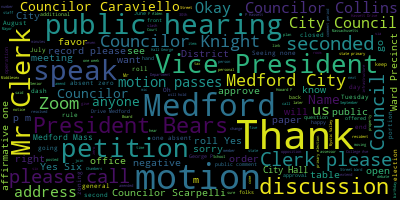
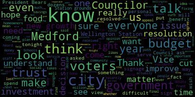
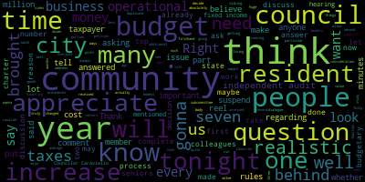
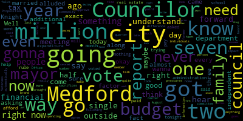

AI-generated transcript of City Council 07-19-22
English | español | português | 中国人 | kreyol ayisyen | tiếng việt | ខ្មែរ | русский | عربي | 한국인
Back to all transcripts
Heatmap of speakers
[Morell]: 27th regular meeting July 19 2022 of the Medford City Council is called to order Mr. Clerk, please call the roll.
[Hurtubise]: Vice President Bears president. Yes, Councilor Collins. Yes. Councilor Knight. Councilor Scarpelli. I see Councilor Tseng online.
[Morell]: President Morell present seven present zero absent the meeting is called to order please rise and salute the flag.
[Bears]: Madam President. Motion to suspend the rules to take papers for 22-411, 22-431, 22-436, 22-437, 22-441, 22-442, 22-443, and 22-439.
[Morell]: On the motion of vice-president Bears to take those papers out of order, seconded by Councilor Scarpelli. Mr. Clerk, please call the roll.
[Hurtubise]: Yes. Yes. Yes. Yes.
[Unidentified]: Yes.
[Morell]: Yes, I mean it burns you negative. The rules are suspended 22-411. Notice of a public hearing. The Medford City Council will hold a public hearing in the Howard F. Alden Chambers at Medford City Hall, 85 George P. Hassett Drive, Medford and via Zoom on Tuesday, July 19th, 2022 at 7 p.m. A link to be posted no later than Friday, July 15th, 2022 on a petition from Cummings Properties LLC and John Walsh to amend zoning map, City of Medford, Massachusetts dated April 13th, 1965 As a reference in chapter 94 Medford zoning ordinance section 2.2, the petition proposes to change the zoning district designation of the area of land bounded by Boston Avenue to the Southwest, North Street to the Southeast, the MBTA railroad tracks to the Northeast and the Somerville border to the Northeast from industrial I to office 202. All is depicted on the plan entitled plan showing proposed zoning change in Medford Mass, Middlesex County. Yeah, June 22 2022. The full materials for the petition can be viewed in the office of the city clerk City Hall room 103 on the city's website at Medford ma.org slash department slash planning dash development dash sustainability by clicking on current CD board filings call 781-393-2425 for any accommodations or aids TDD 781-393-2516. The city of Medford is an EEOA 504 employer. by order of the City Council, signed Adam L. Hervey, City Clerk, advertised in the Medford Transcript and Somerville Journal, June 30th and July 7th. Do we have, before we open up the public hearing, do we have a brief presentation from the petitioner? I know we did have... Name and address for the record, please.
[Michael Levaney]: this evening. As you may recall, we were in front of this council last month regarding our petition to move the properties at 196 and 200 Boston Ave from the industrial zoning district to the newly created 02 zoning district. At that meeting, and I'll branch off a little bit. Councilor Knight asked me a question and I would like to clarify it. You had asked me about the project that we were preparing to consider at 200 Boston Ave about some taxes and some permit fees. I think I went off the cuff a little bit, but I think I was pretty close. The additional property taxes would be nearly $100,000 annually on top of what is already there. And the permit fees and the linkage fees would be more than $200,000. Just wanted to kind of close the loop on that. Was that close? Great. Thank you. So when we were here last, the council voted to move our requests to the Community Development Board for a recommendation. Subsequently, we went to the Community Development Board and they provided a recommendation to the City Council that they approved it, our request. So all that said, we're here to respectfully request that the council grant our request to move the properties at 196 and 200 Boston Ave and reclassify them as O2 in the O2 zoning district.
[Morell]: Thank you. Before we open the public hearing, is there any discussion from the City Council?
[Knight]: Last night, Madam President, we looked at the recertification of our zoning ordinances, this was the type of project that we were looking to bring it project like this is going to be something that's going to be able to create new growth in our community rejuvenate regenerate our tax base and I think it's going to be something that's going to be good for method. I appreciate john for coming up there and doing his homework and answering the questions that we asked last time. But ultimately, by making the small changes, we're gonna be able to create jobs in this community, generate more new growth, more tax base, more linkage fees. So I think it's gonna be something that's gonna be good for the community.
[Morell]: Thank you, Councilor Knight. Any further discussion from the Council? You wanna note that, as the gentleman said, we did receive communication from the City Board on July 14th, recommending the proposed changes. So as this is a public hearing, we're going to open up for public comments. So is there anyone who would like to speak in favor of the petition before us? Anyone on Zoom? We'll move over to Zoom as well. Please raise your hand on Zoom if you'd like to speak on the petition before us. Seeing none, this portion of the public hearing is closed. Is there anyone who would like to speak in opposition of the petition before us? Either in person or on Zoom? Does anyone else like to speak? Okay, seeing some folks filtering to Zoom, seeing none. This portion of the public hearing is closed. Any further discussion from the council or do I have a motion?
[Bears]: Motion to waive the six day public comment period and approve.
[Morell]: On the motion of Vice Mayor Bears to waive the six day public comment period and approve, seconded by Councilor Knight. Mr. Clerk, please call the roll.
[Hurtubise]: Yes.
[Edward Lunningham]: Yes.
[Hurtubise]: Yes. Yes. Yes. Yes. Yes.
[Morell]: Yes. Seven in favor, zero negative, the motion passes. Thank you very much. You're good.
[Michael Levaney]: Thank you.
[Morell]: Thank you. All right, so moving on to 22-431 is the next one we have. All right, 22-431, notice of a public hearing. The Medford City Council will hold a public hearing in the Howard F. Alden Chambers. At Medford City Hall, 85 George P. Hassett Drive, Medford and via Zoom on Tuesday, July 19, 2022 at 7 p.m. on a petition from Christian Garcia of Finance Auto Body, Inc. to operate an automotive repair and auto body shop, class four repair license. At 26 R. Mystic Avenue, Medford, Mass. 02155 in Commercial 2, C2 Zoning District. A Zoom link for the meeting will be posted no later than July 15th, 2022. Petition and plan may be seen in the office of the city clerk, Medford City Hall, Medford, Massachusetts. Call 781-393-2425 for any accommodation slash aids. GDD 781-393-2516. The city of Medford is an EEOAA 504 employer. By order of the Medford City Council, signed Adam L. Hurtubise, city clerk, advertised in the Medford transcript on July 7th, 2022. We can get a short, if we get a presentation from the petitioner, if they are here or on Zoom. If you're on Zoom, please come on up if you just want to tell us a little bit about what you're seeking here.
[Christian Garcia]: Good afternoon. Hi. Yes, I'm looking to get a license to work in Mexico for the body shop.
[Morell]: And just your name and address for the record, please.
[Christian Garcia]: Just your name and address for the record.
[Morell]: Thank you. Before we open up the public hearing, are there any questions from the councillors?
[Knight]: So where exactly is this possible located? It appears to be grappa on the map.
[Christian Garcia]: It's a side street.
[Hurtubise]: Thank you. Thank you, Madam President.
[Caraviello]: I've received multiple complaints, not against your business, but against other businesses over there in regards to parking overnight, leaving people just leaving cars on the street all over the place there. Do you have parking in your facility for all off-street parking?
[Christian Garcia]: Yes, we have a lot of parking inside the building.
[Caraviello]: I'm sorry?
[Christian Garcia]: We have a lot of parking inside the building.
[Caraviello]: And what are you gonna do in the daytime when you're gonna pull the cars out onto the street?
[Christian Garcia]: We have a lot.
[Caraviello]: Where is there a lot there?
[Christian Garcia]: It's up front in the building and 26.
[Caraviello]: They say that's a very congested area. I've got, you know, I'm hearing from all the other businesses in there between the People from Volsau parking their cars all over the street. The company next to Grava parking their cars all over the street. And then there's another yard on Swan Street. So many cars on the street there and nobody's putting their cars inside during the day. And during the day it's just, that's just too congested of an area. So I can't support this at this time. until I see some kind of plan where the cars are gonna be, because I have called the chief for a meeting to discuss parking concerns in that area with the other businesses, not yours, that are causing problems there, too.
[Morell]: Thank you. Councilor Collins and Councilor Scarpelli.
[Collins]: Thank you, President Raul. Thank you for being here today. Just could you clarify how long has your business been in business at this location? How many years have you been at this address, or is this the first time you're applying?
[Christian Garcia]: I have eight months.
[Collins]: Eight months you've been in business here?
[Christian Garcia]: Yes.
[Collins]: Okay, thank you.
[Hurtubise]: Councilor Scarpelli.
[Christian Garcia]: Company was open for three years. It was another building before.
[Scarpelli]: Okay, so you just, this is your new location, correct? Yes. So what was there before that, before?
[Christian Garcia]: It was a Grava building.
[Scarpelli]: It was a Grava?
[Christian Garcia]: It was a Grava building behind 26th.
[Scarpelli]: Okay, because is that what Grava used to do, their auto body, but they don't do it anymore, correct?
[Hurtubise]: Yes, they don't do it anymore.
[Scarpelli]: All right, so you're just taking that location. Again, I understand Councilor Caraviello's concerns, but I'm not going to penalize a new, a new business owner that wants to come into the city for the bills of, of other business owners in that area. I think that if you look at the permit and everything that's been requested of them, traffic issues and concerns. Chief Buckley signed off on that. I know in the past, I can ask my, my Councilor genius Council night. If we could we put a review on that Council night.
[Knight]: Just, if we accept it what I was thinking Council Scott probably was because we have the six day waiting period anyway after the close the public hearing that we request from the code enforcement officer listed suggestions as to what they would deem suitable for that area, and then we can put them on as restrictions to the special permit, when it comes for us.
[Caraviello]: I had spoken to the code enforcement officer and he said that is an issue that Chief Buckley needs to deal with also. I have been, I did talk with him in the last 10 days about the concerns that other neighbors have in that area.
[Scarpelli]: I think if I could recommend that with Councilor Knight, if we could recommend that and just move forward with the six day review and ask for the code enforcement and Chief Buckley to visit that before we vote on any movement moving forward. I think I want to continue with the process, but again, I don't want to penalize a future business owner for something he hasn't done wrong yet. or intends to. So right now, all the paperwork seems to be in order. I understand the frustration of the merchants in that area. But at the same time, I think that has something to do with oversight and not with, um, the petitioner that's in front of us. So I would move approval and ask for some feedback from the court enforcement officer and the chief regarding our concerns.
[Morell]: Thank you. Any further discussion from the council before we open the public hearing? Are you all set Councilor Knight?
[Knight]: I am. I mean, I just think that, you know, ultimately there's a situation that's going on down there. Councilor Scapelli and Councilor Caraviello are absolutely right. If you're driving down in that area, You know, it's the auto mile, we have a lot of dealerships down there, a lot of car repair places down there. And what we're seeing is their vehicles getting parked on the public way, creating a lot of congestion. Just recently, I believe we passed a permit for Fresh Pond Automotive, I think it was. And although they have a lot of vehicles, a lot of parking for vehicles off street, if you drive past the location and take a look at it, I mean, you barely have an inch to get a car in or out of there. I knew our new zoning act also spoke a little bit to what types of what types of the number of vehicles that you keep on a parcel and the like. So I think it's going to come down to a code enforcement issue as well. But right now there is a problem that's down there. The one thing I will say is that I don't think that the It's not gonna be any more detrimental of a use than what was there before, right? It's not like we're creating a situation and making it worse. We have an opportunity to remedy it, make it better. But like Councilor Caput said, I'd like to see the guy be in business. I'd like to see him be able to operate. So I think that the suggestion of asking the chief of police and the code enforcement officer to give us some suggestions as to what we can do to make it a little bit easier down there for their needs would make sense.
[Morell]: Thank you. As this is a public hearing, we'll open it up to public comment. Is there anyone who would like to speak in favor of this petition? And you would be in favor of this petition. Anyone else who would like to speak in favor of this petition? Seeing none, portion of the public hearing is closed. Is there anyone else who would like to speak in opposition of this petition? Seeing none, this portion of the public hearing is closed. Mr. Clerk, could you please read back Councilor Scarpelli's motion?
[Hurtubise]: Councilor Scarpelli, move for approval pending the six day comment period and also to ask for feedback from Chief Buckley and the Code Enforcement Officer through a site visit.
[Morell]: Thank you. And that is seconded by Councilor Collins. Any further discussion?
[Caraviello]: Councilor Scarpelli, if you could amend that. put a 30 and 60 day review on that?
[Scarpelli]: I wouldn't mind because it gives us a little more time once it's in there. So I would support that as well.
[Morell]: Yes. So on the motion of Councilor Scarpelli, seconded by Councilor Collins, amended by Councilor Caraviello. Mr. Clerk, if you could please call the roll.
[Hurtubise]: So I just want to clarify that the intention of the motion is to approve after the six day comment period, correct? Correct. Here comes the roll call. Vice President Bears? Yes. Councilor Caraviello? Councilor Collins? Yes. Councilor Knight? Yes. Councilor Scarpelli? Yes. Councilor Tseng? Yes. President Morell?
[Morell]: Yes, I'm in favor of zeroing the negative, the motion passes. So there'll be a six day public comment period, and then assuming no issues, then it will be approved. So thank you.
[Hurtubise]: Thank you.
[Unidentified]: Thank you.
[Hurtubise]: Thank you.
[Morell]: All right, so moving on to 22-436. 436 offered by Councilor Scarpelli. Be it so resolved that the Medford City Council invite representatives from the Medford Police Department to discuss the national night out in Medford. Councilor Scarpelli.
[Scarpelli]: Thank you, Madam President. Um, if those people aren't familiar with the national night, I would is, um, we have been supporter in my capacity, my professional capacity in the city of Somerville, and it's a great opportunity to bring our neighbors together and as a unified front and and the best people, the best profession to lead that are our men and women in the police department. So if I know that Um, we have Lieutenant Harden it here. If he's, um, you know, just fill us in with all the particulars and I think we should all spread the word and I'll be part of such a great event. So thank you.
[Charlie Hartnett]: Madam President, Charlie Hyden at 100 Main Street, Medford Police Department. I'm here with with Captain Clemente Sergeant Rory Lockwood and Lieutenant Joseph Casey. So if you'll indulge me for a couple moments I just want to explain a little bit why we're here tonight. And I apologize if I'm looking at my notes a lot so. So I'd like to thank you all for taking the time to hear us tonight. I'm obviously a lieutenant with the Method Police Department. Speaking here tonight on behalf of the department's Community Engagement Unit. While I am here to talk about our upcoming event, I would like to take a moment to explain what the Community Engagement Unit is, its mission, and why we stand as a unit. Like I said, behind me are members of our CEU. Captain Clemente is the Administrative Division Commander. Joseph Casey is here as part of the Professional Standards Division. And Sergeant Rory Larkowitz is here as part of the Patrol Division. Although the leadership of this unit may be entitled, leadership may come in all ranks. No more important to this unit are the patrol officers who comprise us and have taken on important roles. They are the backbone of what makes it work. Our street level officers are the ones that you see on the street working around the clock, responding to the needs of Medford citizens 24-7. They have a major role in the current and future role of the department. I'd be remiss if you have seen our social media patrol officer, Jessica Walsh, who's assigned to our patrol division. In addition to our patrol duties, she's taken on a huge responsibility by reinventing our social media presence in the community. She's an invaluable member of our team. If you've seen it in the past and what it looks like now, it's leaps and bounds to what it was. And so we have to thank Jess for that. And she single handedly transformed our outreach and social media presence to be in line with 21st century policing, and with our communities wants and needs. Thank you, Jessica, for that. In addition, the CEO is represented by patrol officers, I wish they were here tonight that we had a lot of scheduling conflicts. Julia Parthia Barbara to Christopher Kyle Terry, Kevin Braxton, and school resource officer, Richard Diobro. These officers bring a wealth of experience and passion to this unit. Combined, the core members have years of experience, knowledge, and passion they bring from both themselves and their respective work assignments. I am sure that I am missing many, many more. However, the Community Engagement Unit doesn't stop at these members alone. We consider and believe that every member of the Medford Police Department is part of the CEU. When I say CEU, I'm just adding the acronym, sorry. and it's from the chief down to include our civilian and dispatch personnel. However, let me be very clear. The CEU is not a directive from Chief Buckley. This is not a program that is forced upon our officers. Everyone in this unit volunteers their time. This is a unit that is completely driven from within the rank and file. Our officers want to be involved in this unit because they want to better our department and want to encourage the positive partnerships with our community. So again, I've explained a little bit, but, and I apologize if I have a time limit. Okay, sorry. So the mission of the Medford Police Department is to create a proactive partnership with the citizens of Medford by providing quality policing and partnerships within the community, thereby improving the quality of life. The CEU hopes that fostering relationships through transparency via social media channels and engagement through community events creates a partnership between the citizens and the police department to create a safer, more welcoming community for all. Effective community policing has a positive impact on reducing crime and helping reduce fear of crime, thus enhancing the quality of life within the Metro community. We're an evolving department, we're a young department. It's a pivotal time of policing and we believe that a department engaging with the public helps not just our community, but our officers as well. I've spoken to officers at roll call explaining the importance of community policing and engagement. However, these are not just words. We can say to them all day long, community policing, engagement, but they mean nothing if we don't live to their meaning. This is why we believe that the first interaction with a police officer should hopefully not be when we have to respond to someone's home for a 911 response. The first interaction should not hopefully be on a motor vehicle stop. Although the way police officers engage in these interactions can be positive and shape future interactions and views of our department, our hope is to reach out to our community through informal events so we can reach out to our community on a more personal level. We want our community to know their police officers and who they are as people. As Sir Robert Peel stated, the police are the public and the public are the police. We wanna be seen as partners in the community, not just a uniform. Our department does not run efficiently without the cooperation of our community and without them trusting us as equal partners. That is why the department has invested time to reaching out to our community outside of the borders of law enforcement. We wanna be advocates for programs, helping grow our community, as well as informing the public on the police role, what we do, why we do it, and how we can help. We want our community to know that we are here to help 24 hours a day, seven days a week. A quick history, CEU blossomed out of a nationwide program called Faith in Blue. The event is a part of a nationwide initiative that aims to facilitate safer, stronger, and more just and unified communities by directly enabling local partnerships among law enforcement professionals, residents, business, and community groups to the connections of local faith-based organizations. For our first event, we partnered with Pastor Bell and Shiloh Baptist Church of West Medford, which has a long history in Medford and strong ties to the community. The event included a bicycle rodeo, car seat installations, activities, food, and music. We had several local businesses sponsor the event, such as Wegmans, JRA Cycles, and Boston Cold Brew Company. And next event is going to be October 22. From this event, we spread the idea of the CEU. The unit hopes to encompass many of the programs which had already been conducted previous to Faith in Blue, such as donating to the No Shave November fundraiser for veterans, senior holiday lunch, Tetra truck events, autism awareness patch program to support the Doug Flutie Foundation, Medford Family Network toy drive, and many more. In addition, we hope to be part of events such as Circle the Square or other Medford events. We want our community to see us so we can see them. open dialogue, and create partnerships within our community. We are hopeful that all of you here, as well as people watching in our community, want to be part of this new and exciting partnership as well. That all being said, and I promise I'm wrapping up, the department would like to extend an invitation to every citizen of Medford, young and old, to our national night out being held at Hormel Stadium on August 2nd from 5 to 8 p.m. National Night Out is an annual community building campaign that promotes police community partnerships and neighborhood camaraderie to make our neighborhoods safer, more caring places to live. National Night Out enhances the relationship between neighbors and law enforcement while bringing back a true sense of community. Furthermore, it provides a great opportunity to bring police and neighbors together in a positive circumstances. Millions of neighbors take part in National Night Out across the U.S. On the first Tuesday in August, they host block parties, festivals, parades, cookouts, and various other community events with safety demonstrations, seminars, youth events, visits from emergency personnel, exhibits, and much more. So to let you know what we're gonna have at National Night Out, which we're very proud of, we're gonna have an obstacle course for the children. It's gonna be run by Officer Greg Giannino and Ricky Raymond. And Officer Gino made a really nice wall, built it himself. So he's very proud of it. We're all proud of him. We're gonna have possibly a dunk tank. We might have to dunk the chief, I think. Just keep Mari Carolina. We're gonna have face painting from the cosmopolitan department. Yeah, the College of Politics Department at the Medford High School. Touch a trunk. Officer Kevin Braxton will be singing the National Anthem. Medford Family Network will be having games. Medford Rec will be having games. KISS 108 will be DJing with Mikey V. We'll be having canine demonstrations. And special surprise, we'll be having Boston Med Flight having a in-flight landing in the middle of Hormel Stadium doing a mock landing. In addition to these events, many vendors will be on hand, MHS football team, MHS cheerleaders, Porter to Hope, I believe Animal Control, Pat Hogan, tons of Medford police officers, Tufts University Police Department, Brotherhood for the Fallen, Richie Silvestro from Silvestro's Barber will be offering free haircuts. The Ronald Tarantino Jr. Fund, Moms Demand Action, And we'll also be having Dave McGilvrey Sports Enterprises coming to promote their upcoming race in September. In addition, the Board of Health, late addition with the Doug Flutie Jr. Foundation for Autism. The Chamber of Commerce will be there. And I just found out from Sandy, we'll be having a voter registration table there as well. So we hope that this event will foster a great relationship with the community and show what we can do for the citizens of Medford. We extend this invite to all of you Councilors and all the residents here in Medford. We hope you can make it and thank you for your time. Oh yeah, we're gonna have a ton of food, by the way. Wegmans is gonna be catered, Bianchi sausage is coming down. Ice cream truck slush. So if you're listening out there, Medford, come on down. Captain?
[Knight]: Is there gonna be a where's Barry setting?
[Barry Clemente]: I don't know about that. No, we really would like each and every one of you to come down. And as Councilor Scott Pellway said, let's bring everyone together. This is going to be a great event. And we may have a surprise or two that Lieutenant Hatnett didn't mention. So put a little mystery in that to make it a little bit more interesting. But it sounds fantastic. It's going to be an outstanding event. We want to see each and every one of you there. We want to see as much of the community down there as possible. And we look forward to seeing you, and come and meet some of our officers down there. Thank you.
[Morell]: Thank you.
[Scarpelli]: Madam President, if I can.
[Charlie Hartnett]: So it just, again, this is the start.
[Richard Orlando]: We're going to keep going so that they know their place in this city.
[Scarpelli]: Thank you for your time. If I can, Madam President, this is important, but we need to get the word out. Maybe one of those mystery surprises should be a robocall from someone.
[Dan Brennan]: Maybe.
[Scarpelli]: But I will tell you, what's amazing is this is what our officers do on a day out anyway. It's amazing that, again, you brought this out and everybody's volunteering to get involved. And because I know the four people standing in front of me and the officers you mentioned all have a love and a tie to Medford and all want to continue with its greatness that it is. I appreciate men and women in blue, I really, I think this is, you know, you guys do everybody does such a good job and making so many people feel welcome but when you bring all those groups together for an event like that, it just reaffirms how great your department is, and how great our community is, and I can't thank you enough for doing that so I'll be there, I will not be in the dunk tank.
[Charlie Hartnett]: there's now there's a liability issue mark out but we can't no one else can so thank you i think this is great thank you for your support just want to say you may see rank up here lieutenants and sergeants but this whole unit this whole event this whole unit is really driven by the patrol officers the ones you see on the street the ones that are doing the good work 24 hours a day the ones that are there at night while everyone's sleeping they're the ones that are doing this work and it wouldn't have been without their support and all their hard work that we wouldn't have been able to do this. So again, thank you for your time.
[Morell]: Thank you. Thank you.
[Charlie Hartnett]: See you there.
[Morell]: Any further discussion from the council? I do see on zoom, Bill Giglio name and address for the record, please.
[Hurtubise]: I'm meeting you.
[Bill Giglio]: I sorry no I was waiting for the thing to go up. So Bill Giglio went to freedom effort I just want to thank the police officers for putting this on. And I hope I'm not jinxing my any of this but is there a rain day just in case or is it is what it is.
[Charlie Hartnett]: We're working on that so far the weather looks good. I think 85 and cloudy, even though it's cloudy still works.
[Barry Clemente]: It would never rain on this event.
[Bill Giglio]: Well, thank you guys. Thank you. Thanks to the police department for putting this on this is a, this is a sounds like a great event. Thank you.
[Charlie Hartnett]: Thank you.
[Morell]: Thank you. Thank you. Thank you all. Do I have a motion on Mr. Castagnetti. Name and address for the record, please.
[Andrew Castagnetti]: Mr. Andrew Paul Castagnetti, Cushing Street, Medford, Mass. I never thought I would say this. It's like 53 years since I've been to Woodstock 1969. And I was not a big fan of method cops in those days. However, things certainly changed in the last two or three decades. And I truly respect them a lot more than back then. So I just want, especially in these trying times out there in this country, in the world, I believe we should back boys and girls in blue because they've come a long way since the safe deposit box heist.
[Morell]: Thank you, Mr. Castagnetti. Mr. Scarpelli.
[Scarpelli]: If I can amend the motion, just make sure that we send out a roll call so everyone in the community knows about this amazing event. So I appreciate that. Second.
[Morell]: So on a motion of Councilor Scarpelli as amended by Councilor Scarpelli, Mr. Clerk, please call the roll.
[Hurtubise]: vice president bears. Yes, that's trivial. That's Collins. Yes, that's a night. That's just compelling. Yes, that's the same. President Morell.
[Morell]: Yes, seven in the affirmative zero in the negative. The motion passes to two dash 437 offered by Councilor Carvial. Be it so resolved that the Medford City Council have the Medford police address the overnight tractor trailer parking within the city Councilor Carvial.
[Caraviello]: Thank you, Madam President. This is a problem that's been long going, especially on commercial street on Route 16 and in the parking lots in our city, these overnight tractor trailer parking there. People are coming from other cities, park the car here in the morning and take their truck and then they come back at night and park it again there. Yeah, part of this is this is part of our current build the city. All of a sudden, see if method is now a truck stop for parking for free parking. They're not method businesses, you can go by and look and see where they're from. They're, they're a bunch a bunch from Everett and other different cities. Let them go out and get some parking somewhere else, not not parking lots and not on our street. So I think Officer Hartnett just went out to buzz the chief. He's gonna come right back in if you just give him a little quick second. I don't know if any other councilors have any other comments on that.
[Morell]: Any other discussion from any other councilors?
[Knight]: Just that most times those trucks, when they are parked, they do have someone that's inside them asleep. Normally they're long haul truckers that are, you know, limited by the amount of hours that they can travel on the road through federal DOT standards. So some where they could be going. somewhere else, but yeah.
[Morell]: Thank you. Any further discussion on the Council before we hear from Lieutenant Harnett?
[Charlie Hartnett]: Charlie Haddon, 100 Main Street. Sorry, Council.
[Caraviello]: actually on commercial street lining the streets every, every night, and you know they come they leave the car there in the morning, take the car and come back and leave it again at night, while the company and a bunch of companies are from Everett, you know the cities are there, and they're also parking in the back of the parking lots of shopping centers, and again it's just so it's not part of our curb appeal. that we're trying to improve in the city. And again, this is not a city of Medford on a truck stop for truck parking overnight. So I think it's about time that they either get tagged or asked to move to where they live. This is on commercial street council. Mostly on commercial. You'll see that there's probably eight or 10 different trucks there. They're all local people, not from Medford, a bunch from Everett. And also we've got the ones that park and back by the city at. They leave that they leave the trucks there overnight, and come back in the next day.
[Charlie Hartnett]: I know the city behind city that state jurisdiction that we were out of purview of that.
[Caraviello]: But as far as commercial street goes I can definitely say, and you'll see the parking the parking in the parking lots overnight, and just just leaving this they just leave the trucks and coming back and getting them in the morning, like a certain day really guys there, and I see them switching off trucks and guys. I can certainly relay these concerns, Councilor, to the department's traffic unit and some of the overnight... And I say, I'm getting calls from the businesses on that street saying that they're just getting to be a little too much for them. It's not one, it's eight, nine, 10 some nights. They just leave their trucks there and go back to Everett where they're from.
[Charlie Hartnett]: Yeah, absolutely. I'm not in the trafficking area, but I mean, certainly I can relate that to trafficking and our office and to the other shift commanders.
[Caraviello]: If he can report back to us on what he wants to do with those, I appreciate it. Absolutely.
[Morell]: Thank you. Any further discussion from the council? On the motion of Councilor Caraviello, as seconded by- Second. Councilor Knight. Mr. Clerk, please call the roll.
[Hurtubise]: Vice President Paris. Yes. Councilor Caraviello. Yes. Councilor Collins. Yes. Councilor Knight. Yes. Councilor Scarpelli. Yes. Councilor Tseng. Yes. I heard it. Excellent. President Morell.
[Morell]: Yes. I'm in front of zero the negative the motion passes. Going on to 22-441, communications from the mayor. To Honorable President and members of the Medford City Council, regarding the Board of Election Commission appointment, dear President Morell and members of the City Council, I respectfully request and recommend that your Honorable body confirm the appointment of Erin DiBenedetto, Democrat of 21 Dearborn Street to the Election Commission for a term to expire March 30th, 2026. A copy of the appointment letter is attached. Thank you for your kind attention to this matter. Sincerely, Brenna Lungo-Koehn mayor. We do not have anyone who's able to attend from the administration tonight. I know Ms. DiBenedetto is very familiar to all of us. I don't know if you want to speak or we have questions from the councilors.
[Scarpelli]: If I can. This is a no brainer in my eyes. I think you're talking about the recommendation to appoint Erin DiBenedetto to the election commission. See, this is a person that who I know personally and I can vouch for her that her commitment to this community and through volunteerism while her children were in the method public schools, and then her energy and efforts to then pick up the mantle around the school committee and hold that office gives her an opportunity to really give that office a different viewpoint and a sense of history. So I think it's, I think, It's someone I respect someone that I think is very honorable and would be a perfect fit for this position. So, um, all I can say is I appreciate you even putting your name down there and, and continuing your, your, um, uh, pursuit and giving back to our community. So, uh, and, and another facet informed. So, um, and again, you have to thank you. the husband, Joe, who's always been there and he just keeps smiling. I don't know what it is. Just keeps dragging. You keep dragging him out and he keeps smiling. So I, um, I would, I would support this nomination. So thank you.
[Morell]: Thank you. Councilor Caraviello.
[Caraviello]: Uh, thank you, Madam President. I want to thank everyone for coming forward. Everyone and I started a public office together. We never really knew each other, but we, uh, over the years we've become real good friends. Uh, and again, I, uh, everyone's a good person. She comes from a good family, and she's always been there for the community whenever needed. She was a diligent member of our school committee, and she continues to serve our community as a volunteer in many different ways, and I'm glad she stepped forward to take this position. I wholeheartedly support her. Thank you for everything you do.
[Morell]: Thank you, Councilor Caraviello. Any further discussion? Oh, Councilor Tseng.
[Tseng]: Thank you. Erin DiBenedetto was one of my mentors growing up. You know, I think the other Councilors have put very well, you know, her service to the city. I'm excited to see that she's continuing to serve, choosing to continue to serve our community. I wish I could be there in person to see her, to give her a hug, but I'm happy to support her from my room and not to pass on my cough.
[Morell]: Thank you, Councilor Tseng.
[Knight]: I second Councilor Scarpelli's motion to approve.
[Morell]: Any further discussion from the council? I do see, oh, nope, my hand is gone. Okay, on the motion of Councilor Scarpelli to approve, seconded by Vice-President Bears. Mr. Clerk, please call the roll.
[Hurtubise]: Vice-President Bears. Yes. Councilor Caraviello. Yes. Councilor Collins. Yes. Councilor Knight. Excuse me, Councilor. Nigel. Councilor Scarpelli. Yes. Councilor Tseng. Yes. President Morell.
[Morell]: Yes, six in the affirmative, one absent, zero in the negative, the motion passes. Congratulations. Moving on to 22-442, City of Medford call for state primary election Tuesday, September 6th, 2022. be it ordered that the election coordinator be and she is hereby authorized and directed to notify and warn such of the inhabitants of the city of Medford as were qualified by law to vote for candidates at the state primary election on Tuesday, September 6, 2022, to assemble at the polling places in their respective wards and precincts and there to give their votes for a governor, a lieutenant governor, an attorney general, a Secretary of State, a Treasurer, an Auditor, a Representative in Congress's 5th District, a Councilor in the 6th District, a Senator in General Court's 2nd Middlesex District, a Representative in General Court 23rd, 34th, and 35th Middlesex Districts, a District Attorney, Northern District, a Sheriff, Middlesex County, and such other vacancies as may exist or occur in the state primary election. And the polls of said state primary election shall open at 7 a.m. and remain open until 8 p.m. be it further order that the following name polling places be and they are hereby designated for use at the state primary election on September 6, 2022. Voting precincts, Ward 1, Precinct 1, Andrews Middle School, 3000 Mystic Valley Parkway. Ward 1, Precinct 2, Firefighters Club, 340 Salem Street. Ward 2, Precinct 1, Roberts Elementary School, 35 Court Street. Ward 2, Precinct 2, Roberts Elementary School, 35 Court Street. Ward 3, Precinct 1, American Legion Post 45, 321 Winthrop Street. Ward 3, Precinct 2, Temple Shalom, 475 Winthrop Street. Ward 4, Precinct 1, Tufts University, Cousins Gym, Front 161, College Ave. Ward 4, Precinct 2, Walkling Court, slash Auburn and North Street, Fondacaro Center. Ward 5, Precinct 1, Columbus Elementary School, 37 6th Ave, which, yes, this is the Missittuck, which we'll motion to amend that. So Ward 5, Precinct 2, Missittuck Elementary School, 37 Hicks Ave. at Ward 6, Precinct 1, West Medford Fire Station, 26 Harvard Avenue. Ward 6, Precinct 2, Brooks School, 388 High Street. Ward 7, Precinct 1, Mystic Valley Towers, North Building Entrance, Sales Office, 3600 Mystic Valley Parkway. Ward 7, Precinct 2, McGlynn K-8 Public School, 3004 Mystic Valley Parkway. Ward 8, Precinct 1, Senior Center, 101 Riverside Ave. And Ward 8, Precinct 2, South Medford Fire Station, zero Medford Street we have election. We have a motion from Councilor Scarpelli. I think it's Councilor Scarpelli to approve but we do have election coordinators. Anything else to add?
[Hurtubise]: It's all set.
[Morell]: Great. Do we have a motion to amend the language just to reflect that?
[Bears]: Motion to amend Ward 5, Precincts 1, Precincts 2 to reflect the name of the school.
[Morell]: So the motion of Councilor Scarpelli to approve as amended by Vice President Bears, second by Councilor Collins. Any discussion from the public? None. Mr. Clerk, please call the roll.
[Hurtubise]: Vice President Bears. Yes. Councilor Caraviello.
[Morell]: Yes.
[Hurtubise]: Councilor Collins. Yes. Councilor Knight. Yes. Councilor Scarpelli. Yes. Councilor Tseng. Yes. Yes. Thumbs up from Councilor Tseng. President Morell.
[Morell]: Yes, 7-4-0 in the negative. The motion passes. Moving on to 22-443. 22-443 to the Honorable Medford City Council in response to election advisory number 22-01. The following are the city of Medford's early in-person state primary voting dates along with our designated location for your approval. Howard F. Alden Council Chambers located at City Hall, second floor, 85 George P. Hassett Drive, Medford, Mass. Saturday, August 27, 2022, from 9 a.m. to 3 p.m. Sunday, August 28, 2022, from 9 a.m. to 3 p.m. Monday, August 29th, 2022, from 8.30 a.m. to 4.30 p.m. Tuesday, August 30th, 2022, from 8.30 a.m. to 4.30 p.m. Wednesday, August 31st, 2022, from 8.30 a.m. to 7.30 p.m. Thursday, September 1st, 2022, 8.30 a.m. to 7.30 p.m. Friday, September 2nd, 2022, from 8.30 a.m. to 5.00 p.m. Notices will be duly posted at the date and time required. Respectfully submitted, Sandra Burbank-Gayle, Elections Coordinator. Vice President Bears.
[Bears]: Thank you, Madam President. Thank you, Sandy, for being here. Just wanted to confirm, so these are the seven days of early voting for the primary election.
[Sandra Burbine-Gale]: For the primary election. We have 14 days for the general.
[Bears]: 14 days for the general in November, okay. And just in terms of mail ballots, is that starting as well? Is there a deadline for that?
[Sandra Burbine-Gale]: There is a deadline. The deadline for mail-out ballots to request them, I believe, is the 23rd of August. Okay. I believe it's the request date. The 23rd of August is that date. And then, just so you're aware, to compensate for the Monday holiday, that's why we're staying late till 5 p.m. on September the 2nd.
[Hurtubise]: Got it.
[Sandra Burbine-Gale]: Because otherwise we would have normally over-the-counter voting from May 30 to 12, the day before an election. But since we can't, we're compensating that with 5 o'clock. The vote by mail cards went out to Middlesex County last Thursday. I did receive information earlier today that people had started receiving those cards. So we're looking for those to start coming back at any time.
[Knight]: Great, thank you so much. You're very welcome.
[Morell]: Any further discussion from the council?
[Knight]: Second, Councilor Scarpelli's motion to approve.
[Morell]: On the motion of Councilor Scarpelli to approve, seconded by Vice President Bears. Mr. Clerk, please call the roll.
[Hurtubise]: vice president bears. Yes. Yes. Yes. Yes.
[Unidentified]: Yes.
[Hurtubise]: Yes. Yes. Yes. Yes. Thank you. Thank you. Moving on to two dash four three nine.
[Morell]: 22-439 offered by Vice President Bears and Councilor Collins. Ordered by the City Council of the City of Medford that in accordance with the provisions of Chapter 59, Section 21CG of the Massachusetts General Laws, pending the approval of the Mayor of the City of Medford and with the approval of the Secretary of State's Office, the following question shall be placed on the ballot and submitted to the voters of Medford at the biennial state election to be held on Tuesday, November 8 2022 quote shall the city of Medford be allowed to assess an additional $12 million in real estate and personal property taxes for the purposes of the general operation of the Medford public schools for additional additional classroom teachers and staff classroom and infrastructure needs and classroom teacher and other district staff compensation $6 million. The general operation of the Medford public library for additional staff staff compensation books and materials needed $400,000. The general operation of the Department of Public Works for additional staff, road and sidewalk infrastructure needs and tree planting and maintenance $2,600,000. And for the operation of general government $3 million for which the monies from this assessment will be used for the fiscal year beginning July 1st, 2023. Councilor Collins or Vice Mayor Bears. Excellent affairs.
[Bears]: Thank you, Madam President. If I may like to make a short presentation detailing the proposal in front of this body.
[Christian Garcia]: Please go ahead.
[Hurtubise]: Thank you. I can figure it out.
[Bears]: So thank you, Madam President. As was just read, was the language as required by Chapter 59, Section 21C, Subsection G of Massachusetts General Laws pertains to property tax levy referendum vote. This presentation is regarding the specific proposal before us, which is to request that the mayor submit to the Secretary of the Commonwealth a ballot question asking the voters to make the decision of whether or not the city should be allowed to assess additional property taxes to fund essential public schools and city services. As we discussed deeply extensively throughout June, and during the fiscal 23 budget process, Medford is not bringing in enough revenue to meet the spending needs for city services, public schools and the maintenance of our buildings and infrastructure. We've talked about this extensively. We have bare bones budgets and low staffing levels for most of our city departments, which means that the city provides fewer services than residents expect and deserve. There's limited funds at our schools for new materials educator and staff contracts and maintenance, and we have a massive infrastructure backlog for our roads and sidewalks totaling $100 million. Many of our city and school buildings and crumbling or at least disrepaired state and limited maintenance funds. Making that long term problem worse since fiscal year 2021 the city budget has had a structural deficit, which means that unreliable one time revenue sources have been used to balance the budget and fiscal 2021 fiscal 2022 and fiscal 2023. This figure has ranged between 6 million and 12 million since fiscal 21, and about $8 million and $12 million over the last two fiscal years. What that means is that the only short-term options available to close the structural deficit as one-time revenue sources dry up are either, one, further budget and service cuts that will deeply hurt and impact our public schools and city departments, or raising revenue through the operating budget through a Proposition 2 1⁄2 override to close the structural deficit. In June, the council made several recommendations to the mayor, including a request that by July 14th, the mayor provide an alternative revenue plan that avoids further budget and service cuts in future fiscal years. The mayor's response to those recommendations in late June did not provide a detailed plan and suggested that fiscal 24 city budget may have even more service cuts than the budget that we just discussed. This is a chart of what that looks like. On the left, you see fiscal year 20, which was the last year that the city did not have a structural deficit. In fiscal year 21, we used almost $6 million in free cash to balance the budget. In fiscal year 2022, we used over 12 million in ARPA revenue replacement funds to balance the budget. The initial proposal for the fiscal 23 budget would have looked somewhere around $11.25 million in one time revenue to balance the budget that ended up coming down to about $7.8 million in one time revenues, once the final fiscal 23 budget was approved. So there's again a significant structural deficit now baked into the city budget. where we are relying on one-time revenue funds that may not be there in the future to provide the essential public school and city services that residents want. This is the process that has come up so far. As I mentioned before, at our June 14th and June 21st meetings, the council requested that the mayor provide an alternative plan to end the structural deficit and avoid cuts. We asked that to come to us by July 14th of this year. We received a response in June that did not have a detailed plan. And then today we received a press release from the mayor suggesting a $3 million override referendum that came out around 1.30 today. The steps that would go before us on this, if we were to go on this timeline, again, this is the timeline where an override would be earliest on the ballot. and would coincide with the current election cycle, would be the council voting at the meeting tonight, pending mayoral approval to place a referendum on the November 2022 ballot. According to state law, the mayor would then have to send the referendum to the secretary of state by August 2nd, the first Wednesday in August, to then place an override referendum on the ballot. And then on November 8th of 2022, Medford voters would cast ballots to determine the outcome of the referendum. The this proposed referendum the text is here it's already been read once asked that question is formed here on the right, along with a yes or no option as proposed it would end the structural deficit facing the Medford city budget for fiscal year 24 and future fiscal years. It would provide needed resources for students and educators in our public schools. It would increase support for the Department of Public Works for staff and materials needed for road and sidewalk repairs, provide funding for the Medford Public Library, and would provide some flexible funding to address urgent issues and key priorities as needed. In addition to these items, in the long term, it would give the city breathing room to make long overdue investments in our city services as other revenues recover from the drop-offs that were caused by the pandemic. The cost impacts of this referendum as proposed for Medford residents are as follows. First, if a majority were to vote yes in November if this were to be on the ballot, the property tax levy would increase by $12 million. This is commonly referred to as a prop two and a half override. The annual cost for the average single family home, which was valued at $654,400, would be 549.70 per year. So it would cost 550 per year for the average single family property. That's $46 a month or $1.50 per day. The way this would work is it would change the tax rate and then apply to each property based on assessed value. The Massachusetts Department of Revenue provides a tool to calculate impact on taxpayers. If this were to appear on the ballot and yes vote were to happen, it would only allow an increase over 2.5% for one year fiscal year 2024, all future years would be limited to the same two and a half increase that the city has been limited to since 1980. The city can also implement exemptions to help residents most affected. I believe in August, we have on our agenda to be discussing the residential and owner occupied exemption, as well as potentially I have an item on the agenda tonight, we're increasing the eligibility and exemption amount for the over 65 senior exemption. Absolutely. And again, if you want to actually look at the calculator from the Massachusetts Department of Revenue, you can go to this link, bit.ly slash DLS tax calc, and you can plug in any amount you want and see what that impact would be on the average resident. This is actually that exact calculation pulled out today, maybe a little hard to see, but I will be posting these slides after the meeting online. Again, for the average single family property, value at $650,000, it would be a $550 per year increase. So thank you for allowing me to make that presentation. I'd just like to follow up with a couple of comments. This is a proposal specifically to address the existing structural deficit within the city budget and avoid further cuts in fiscal year 2024 and beyond. It does not address our capital needs backlog, like a new fire headquarters, Medford High School, or the $100 million road and sidewalk deferred maintenance amount. This proposed amount and timeline is because it would fully eliminate the structural deficit in one fiscal year, provide certainty and stability for our city's financial future, and do so within an already scheduled election. Now, this is just me personally. It is my personal firm belief that we have to act now, and that we need to trust the voters to make this decision to end the structural deficit and stop future cuts to our budget. However, regardless of what happens tonight, or between now and August 2, the August 2 deadline to move forward on this timeline, I remain fully open to suggested changes by my council colleagues, collaborative engagement with the mayor's office, which appeared to begin today, and I would support any process needed to move forward, whether it's the one that I've outlined tonight, or a different process that we work towards collaboratively. At the end of the day, the budget is in the situation that it's in, we have a structural deficit, and we know from the month of discussion around the fiscal 23 budget that our public schools and our city departments can't afford any more cuts, there's nothing left to cut in the city. And if we don't find revenue to address the structural deficit, we're going to be in a very difficult position in fiscal year 24, and years beyond that. I'd like to conclude my comments by thanking my fellow Councilors for allowing me to make this presentation, and I look forward to hearing what you have to say about this issue. Thank you. Thank you.
[Morell]: Thank you, President Bears. Councilor Collins, would you like to speak?
[Collins]: Sure. Thank you, President Morell. Not to belabor the points that Vice President Bears has already made, but just to underline a few of them to further expand on my perspective and why I was interested in co sponsoring this motion. What I hear about the most from my constituents are roads, the library, the schools, trees, city services, as was discussed as we said ad nauseum during the fiscal year 23 budget process over the past month. We have a structural deficit. we can't do more with less. We can't continue to keep asking our city staff or city services to do more with less. I don't find it acceptable to continue cutting city services to the bone and asking our residents to make do with fewer and fewer resources and services, asking our city staff to do more and more with less and less support. We heard during the fiscal year 23 budget process that next year's budget will likely be even leaner. I don't think personally, I'm not willing to accept cuts that are even deeper for next year than what we were asked to contemplate for fiscal year 23 because we saw, and we heard from the residents and the staff of the city, how that would affect our city's operation. I also want to emphasize as was already explained if the mayor approves this resolution if this resolution proceeds. as it's currently designed, it would become a referendum on the fall ballot. It would be left up to the voters to decide yes or no. This is not a matter to be taken lightly. This is a big question. I want to see it put to the voters. This isn't something for the seven member bodies to decide. I want to see this put to the voters to decide how we invest in the future of this community. And I also just wanted to shore up Vice President Bears' last point. I think that developing a reliable, sustainable, appropriate revenue plan to fund our communities urgent deserved needs is an urgent matter. I'm also willing to collaborate and be flexible on what exactly that looks like, and including some other proposals that are on our council agenda tonight. I'm also open to exploring all of the options to mitigate the potentially painful effects of an override, for example, the proposal to increase the senior exemption to the maximum allowable for now. Thank you.
[Morell]: Thank you, Councilor Collins.
[Scarpelli]: Councilor Scarpellilli. Thank you, Council President. Thank you, my colleagues, for bringing this forward because it is something that we can discuss and discuss we should. But I'm looking at this in three different processes. One, the presentation and the process. I think that the budget season was difficult, but I've heard from so many constituents that something serious as this, probably something This is probably a topic that's probably. one of the most intense, serious questions that we should visit in our community in years, that we haven't visited in years. So I think understanding the process and looking how it was presented that we're presenting this in the middle of the summer and a lot of people that aren't around to really share the concerns. I personally received over a hundred emails, phone calls, people expressing concerns, questions that we have. So, to reiterate the process, not having the city assessor here tonight to answer some questions I think it's very important to not have the questions that we have to get answered for us is very important. For one, the senior exemption, I think it sounds great. I think we should give every senior exemption. Unfortunately, it falls back on the taxpayers. It'll be an additional money. So when we're talking about $12 million, if we have a tax break and understand the ramifications of who's gonna pick up that break. it's gonna be taxpayers, the general taxpayer. And that number that Councilor Villes mentioned of 500 some odd dollars a year, that's a question. The other question people asking is, okay, so this is for one year. And then what do we do after that? Do we apply for others? So these are just simple questions that can't be answered. The other piece of this is truly the infrastructure within City Hall right now. I don't think we have the manpower or the person power to really function or present an override in its totality that could be put forth in a thoughtful and professional way. I just don't think we have that capacity today. So I think that's another concern. And then when it comes down to the concerns of the constituents and I'll share with everybody, the biggest issue is that This is going to affect so many different people. We had a, we had a budget season that was very contentious, and a lot of people called us extortionists and, but it was something that we needed to move forward to make sure that we, the city gets gets the basic necessities that we think we need to move forward. And then I had a discussion with the mayor and talking about Some of the concerns we've had for years, I was a councilor that put forth a debt exclusion for a new fire station. The mayor assured me that it's going out to architectural design this week and we're moving forward with the new fire station. So that's in a positive light. What we've gone through, what Councilor Behr so eloquently put, and the pains that we've seen the last couple of years, think had a direct reflection on the COVID outbreak and the lack of growth here in the community. We talked about the 40B projects that we haven't been able to get off the ground and creating revenue that way. The Mystic Ave corridor and increasing revenue by opening up new zoning for clean energy or biotech or whatever is talked about. I know Councilor Caraviello talked about everyone else being landlocked and Metro being a unique community right now, that we can really do some great things and create revenue that way. So our first license went out to our marijuana distributor that will bring in some funding. So we're finally seeing some light at the end of the tunnel. And believe me, I'm not calling this a knee jerk reaction, because it isn't, because we've lived through some tough times. but I think ultimately who this affects in the community, the people we're trying to support. I mean, all of us have talked about, you know, affordable housing, people not being able to live in Medford, people not even be able to afford rents. Well, the homes that aren't single family or the homes that are rented, what happens because the taxpayer is not going to fit the bill for this. All they're going to do is turn and increase rents for their renters. And that's not going to help one of the biggest groups we've all worked for to make sure that we can make sure that methods affordable for all. So I think there's a lot of questions that if We had a team here, and we can sit together and figure out what's the best course of action with the true blueprint of what true new growth looks like. And understanding where we can, where we need to move. Listen, if $3 million is what it is and we need to move forward with that. after it's a thorough plan and how we don't hurt our taxpayers as much as we can. I think it's something we visit, but it's something we visit and explore. I think it's very dangerous tonight. The other point that I'll bring up is that, and I, you know, I talked to my colleague about this, that, you know, George, you know, people, this is another mis-attack. It's another mis-attack. In the middle of the summer, you're coming in, you're blindsiding the public and then, bam. We don't want to divide. I think, We've done a good job working together, and I just don't want to divide the city any more than it has to be. These are important issues. It's something that we've all looked at. But I think it's it's also important that we truly don't know what's down the line. We've we've asked the mayor and I think the mayor is going to present us with the capital improvement plan. And one of those plans is going to be a new high school. And if that's the case, you know, if you're talking about looking at the parents and And what they'll be asking for for something like that and what we're asking for today, it's not just $550. This is something that's gonna be impacted many different levels. So a household's not just gonna see an increase of $550, it's gonna be much greater. And that's what I fear. And I think that not having, you know, people in this room that can answer our questions and us not vetting that out properly as a team, I think, you know, even with any money people, we do how many readings? We do three readings. So I think it'd behoove us, I know I wanna hear everybody before I make any motions, but it would be really beneficial for all of us to really sit down and look at the plan of totality before we put this out there. And it's knee jerk reaction because the truth of the matter is, I've gotten the emails too that said, hey, we need that override, support the override. Well, okay, in theory, it sounds great. With $12 million, we get to do all these great things. We don't know that. So, and that's and that's the other underlying situation that is is bothersome to me so I just caution I know that everybody wants other people want to talk but I just, you know, I appreciate bringing this forward because the dialogue has to come out. We are, we are in some constraints. But I think this is another situation. We worked together with the administration say, let's look at true new growth instead of looking for a proposition to an app override. I think that looking at that and exhausting that before we do something this drastic, because this hurts the person that lives in our neighborhoods and in every single home and apartment in the city of Medford. So we just have to be careful because as good as it sounds out front, You did your homework, no one's ever going to question that it's very thorough, but there are other questions that what is this with the two and a half, is this added with the two and a half, or without the two and a half the original two and a half. Is it with the. How much would it be if we had to incur the cost of the senior exemption. I understand where that went because we did our assessment. We got a report back when I tried to do the debt exclusion for the fire station. And I believe it was with every single senior citizen to be excluded, it was $17 a quarter, I believe, for our taxpayers to build a new fire station. So I know the process. I know it's not easy. That failed, I believe, six to one back in the day. And, and again, even at that point I presented it, knowing that we haven't vetted it out properly so, and this is, this is a big deal here in the city so like I said, I really think we should. take a deep breath, look at all the information that was presented, and really move on to another meeting so we can understand this with all our stakeholders in the room. That means the mayor's office, a city assessor, and looking at all of the different angles and all the different possibilities that we can benefit from and we can also hurt from. So thank you, Madam President.
[Morell]: Thank you, Councilor Favella.
[Knight]: Madam President, thank you very much. I think it's important to point out that we have a deficit, because the council approved the spending. The council approved the spending. All right. And we certainly do have a revenue problem. But we also have a spending problem. And we have a prioritization of spending. Okay, so when we look at kind of override is the only two options I don't think that that's the case. I think, I think we had an opportunity to eliminate a lot of waste in this last budget. When we look at what's going on with KP law and this package here, $255,000 in outside legal fees. That's $255,000 that could have gone to the school department. The mayor gave us $300,000 out of the utility account, so the lights might not be on at the hockey rink come the end of the school year, but we got the $300,000 back in the budget, because she took it out of the utilities account. She wanted to take it out of the contract account. We have a spending problem. We have an embraced development to generate new growth. We're fighting 340B projects that would bring in millions and millions of dollars to this community. We have the gentleman up here today talking about a small scale project that's gonna bring in $300,000 annually, just our permit fees and property taxes, plus the jobs it's gonna create, which is gonna bring more revenue into our community in the circular flow of a local economy. We have inflated salaries in a top heavy school administration. We're not investing money in the classroom. We're investing money at the top. We're investing money at the top. I remember doing budgets with Roy Belson. He'd get up here and he'd speak for five hours. He'd know every single dollar, where it was being spent, why it was being spent inside and out. He didn't talk about rubrics. He didn't call somebody up here to speak for him. He got paid $160,000. He came to work for 20 hours a day and he knew that budget inside and out. We have human resource issues across every single department in the city. And we have a proven lack of fiscal constraint, transparency and mismanagement. So is now the time to give the administration more money to spend when they've shown us that they can't do it responsibly now? And we've been patent possible with it, improving spending above and beyond our means. So when we do that, yeah, I guess Councilor Bears is right when we spend above our means, the only thing we can do is ask for more money. But if we sit down, we take a look at the budget and we see that we have $100,000 human resource director in the school department, and 140,000 human resource director on the city side, and then I communicate, and then I'm working together. I think that's a duplication of efforts and wasteful spending. We need to look at this in a way that the individuals in this community if this goes through and quite frankly, I think that we do need to generate more revenue, how we do it is the question, right. Now if you look at the tax rate in the city I mentioned, it's very low compared to our neighboring communities, it's very low. And over time we've seen commercial properties in the number of passes that are commercial dwindle. So we're at about 7% now, you know what I mean, I'd like to see us at around 15 to 20. For us to have that strong commercial tax base that we don't need to have this conversation every year, but we can't do that with the zoning Board of Appeals that doesn't embrace growth with a historical commission that won't let anybody improve their own homes to generate increased tax revenue and improve curb appeal and neighborhoods. So, wow. This is a very. interesting issue, and it's an issue that needs to be discussed, that needs to be talked about, because we cannot continue to go on this way. We absolutely cannot. Our roads are the worst in the region. DPW is the most understaffed in the region. $2.6 million for DPW personnel will go a long way. It will go a long way, if the money ever gets there, if the money goes to where it's intended to go. At the very least, if this question does come to fruition, if this issue does come up, every individual should get an estimate as to what it's gonna cost them individually. And it would be great if we had an assessor in this community that could answer some questions and put that data and information together for us, but we don't even have an assessor. So for us to do this right now, I think is scary. We're looking at exemptions. Exemptions are great, but the money has to be shifted somewhere. And the more exemptions we pass, the more we're gonna squeeze those in the middle and they're already being squeezed. So we have a lot to think about here and a lot to discuss. I just see this as a spending issue and a spending problem here in the community, as well as a number of other issues that are going on that I think are putting us in a position to be a little bit less financially sound than we could be if we were a little bit more proactive. Three years ago, we passed the budget. And that budget had zero dollars and zero cents of deficit spending. Three years later, we spent $29.7 million in deficit spending. Thank you, Madam President.
[Morell]: Thank you, Councilor Knight. Councilor Caraviello.
[Knight]: Thank you, Madam President.
[Caraviello]: So July 19th, we sit here tonight and trying to raise $12 million. And all my councilors have all made great points. Councilor Bears, you're right. The city needs more money. But with the problem with government, the more money we give government, the more money government spends. And I think my other Councilor, right, I think we have to look at where we're spending our money and what we're doing with it. I mean, how much more do we want to keep giving this administration to spend? So if this group was really serious about their proposals tonight, we have no assessor here tonight to answer any questions. And the assessor that we have is on the interim who's working for two different cities, which I don't even know if that's even legal. All right, there's no CFO here tonight to answer any questions. And there's nobody from the administration to answer any questions here tonight. And let's say that's, to me that says that across the hall doesn't care. There's nobody care. And this money should have been added into our budget from three weeks ago when we voted on that. And let's say we squeezed as much as we could out of it, but going forward, Who ultimately pays for all this? It's the renters? I don't think I know a generous landlord in this community who's gonna take a tax hit and not pass it on to the renters. And we talked about affordable housing, affordable housing keeps going up. And we are probably in the worst of times financially for many people in this community. Washington is tone deaf to what's happening in this whole country because look at inflation, gas, food, your electric bill, your gas bill, your oil bill. These are all bills that are mounting and mounting every day. And now I know we say the average house is 600,000. So how many average houses in this committee? I think if we actually go out and look, you're gonna see a lot more. You know, they say, well, $800 is not that much money, or $1,000, or $500. For some people, it is a lot of money. It is a lot of money. People are struggling right now. There's still people that aren't back to work. We have seniors in this community that are single seniors, that may not have a husband or a wife, that yes, are they house rich? Yes, they are. And that house rich is gonna cost them more money if we pass this. So, again, I agree. We do need to control our spending, but to keep asking for money every year is just not a fiscal way to run a city. I think we have to control our spending and get a fiscal plan in order before we vote on anything. And like I said, we have nobody from any part of the city government here to give us any guidance or their opinion on anything today, other than something that we got at two o'clock this afternoon from the mayor's office.
[Morell]: Thank you, Councilor Caraviello. Vice President Bears.
[Bears]: Thank you, Madam President. Thank you to my fellow colleagues for their comments. This isn't the administration I wanna be managing this money. This is the situation I want us to be in. We've been asking whether it's, what are we at two and a half years now, we've been asking for certain financial reporting and information, seven months we've been asking for it under this council. I can't even begin to think the number of hours we spent in June, going through the budget and saying, what the heck is going on, and us having to do the deep research with our packet of, you know, sheets of paper where we didn't know what's happening. I don't disagree with that at all. As you said, there isn't anyone here tonight from the administration. We asked unanimously a month ago, you know this, we can say it's coming up now and I understand this specific proposals coming up now. But we asked, we asked over a month ago, after months and months and years and years of requests for a fiscal plan and a revenue plan, and how are we moving forward and how are we going to fund the city for something, you know, and we got an answer. Five hours before the meeting that was maybe we could do something like this and you know we're just starting to think about it today. So you're right. Where's the leadership. At this point, I understand the concerns that you have, but we all know that there's not eight to $12 million in the city budget that we can go find that doesn't mean firing people. who work for this city. It's just not there. We could find a few hundred thousand, maybe we're lucky, we find a couple million, but if we hit the wall in fiscal 24, and we can't address the structural deficit, and we're talking four, eight, 12 million in a structural deficit where we don't have the revenue to come in, it means people are getting laid off, that the city's providing even less than it already is providing, and things are getting worse. The people who are hurt the most when government isn't there are the people who need government the most. So I understand that the higher costs on taxpayers is gonna have different impacts on everyone who pays. We're all individual people, we all have our own stories, we all have our own experiences. And I don't wanna mitigate that. But the act of government that we do is balancing. You can't name a single business in the world where when their costs go up 9% in a year, they can only raise their price 2.5%. It doesn't exist. There's, there's no business in the world where you would have to cut, you know, I mean, essentially that's what we're saying. If we're, if we're going to go into this situation without additional revenue, and I understand all of the reasons my fellow Councilors have put out reticence with this administration and how they'll manage it and all of that. But if we run into that wall in 11 months, which the mayor basically said to us in her budget letter, we're gonna run into that wall, because the offer money is going away and we don't have the one time revenue, we have a structural deficit, and we're going to be responsible and lean. Whose jobs are we going to be responsible and lean with? I don't I don't want to fire people we already know the city can't do what it needs to do so so you know I understand that we need more leadership. I completely agree that we should have a proactive revenue plan for this city. At this point it's falling on us. We don't have a staff we don't have an assessor we don't have a finance department we're just a city council the city of Medford. Somebody needs to step up. Now, I understand the reticence, I completely understand it. I wish we weren't at this moment asking this mayor to manage this money. I agree with that. But we are where we are. And as I said in fiscal 21 and fiscal 23 and I'm now looks like I'm gonna have to say in fiscal 24, I'm not gonna vote for a budget where there's less teachers. I'm not going to vote for a budget where there's less public safety. I'm not going to vote for a budget where there's less public works. I'm not going to vote for a budget where we defer the maintenance on our roads and sidewalks and buildings even more. It's unsustainable. It's completely unsustainable. So, that's why I think we need action now. I hear that there are hundreds of people who are concerned. that we wish we had a better process that we had more time to discuss it. We've been asking for that. I don't disagree with anyone that we've been asking for that we haven't gotten it. And now we're getting pushed to the wall. So, that's the reason this is this is this, I put this before you with Councilor Collins tonight is because our backs against the wall. And I don't want it to be next June where we're finding out, oh, my God, we don't have this money. We're gonna have to cut this at the last minute. There's another 10 jobs gone. There's another bunch of vacancies gone. There's another bunch of pink slips at the school. We're sitting here till 2am having a negotiation that we should have had over the months and months before that. I don't want to be there again. If we get there again, I'm gonna feel confident that I put something on the table to try to avoid it. If it doesn't pass this council, it doesn't pass this council. If the mayor doesn't put it on the ballot, the mayor doesn't put it on the ballot. If the voters vote it down, the voters vote it down. I just want to advance some solution to this problem, because it's not coming from the executive leadership right now. It's just not. I mean, we put it out there a month ago. Send us something, please. A plan that's not this. Anything that's not this. That was the resolution. Nothing. And then what do we get today? We get this but smaller. So there is no plan that's not this. Again, I respect all of you deeply. We've done a lot of good work. We're gonna come to consensus. I wanna try to move through a process where we have the least harmful impacts that we possibly can. And we do our best to keep the city functioning and avoid laying people off and firing people. I think this is an approach to get there. I'm open to alternatives or amendments or different approaches to get there. And I'll leave it at that. I just, I know it feels, like a short timeline. I know it feels like we need more here. And maybe we can come back. Maybe there's a special election. Maybe there's something else, right? I don't know. I'm not, I'm not trying to put this in a box. I'm just saying there's an election in November. This is how we address this problem with the election in November. And I think it's something we need to seriously consider. Thank you.
[Morell]: Thank you.
[Tseng]: Thank you, Madam President. I know this is a serious debate. This is, you know, this is This is a topic about which I've received dozens and dozens and dozens of emails and calls over the last few weeks, including during budget season. And I think more importantly than all the messages that I've received, I live both sides of this debate. My parents are homeowners in the city, they've invested in the city. I recently graduated from the Medford Public Schools. I know what the budget cuts look like. And I know what the tightness of the money looks like. And I've been on the doorsteps, and I've been asked to campaign, and they've been asked to improve our roads, improve our schools, do X, Y, Z. But the fact of the matter is something I've learned while in this office is we don't even have a bare bones budget. Our budget cuts through the bone. We can talk about a lean government, we can talk about a fiscally responsible government, we can talk about a government that only serves the basics, but we aren't even there yet. And when we asked the mayor for a plan, what we heard was, we don't really have a plan, next year will be worse. The only way we can, and the implication is the only way we can get out of this mess is to advance difficult, politically difficult ideas. It's not on my wish list to raise taxes in the city. No one likes it. No one likes it. And it's a political risk to do it anyways. But I think we need to step up and lead and trust the people with this decision. I think, you know, we've heard a lot about cutting spending and new growth. The fact is, when we look at all the proposals of things that we could cut in the city budget, it doesn't get anywhere close to $12 million. The only way we can get to that $12 million, as Vice President Bears said, is to lay off very essential staff in our city. And even with the budget that we have now, even if we didn't have to cut, we are already losing important members of our staff. We're already unable to fill very important positions in city government that every other city government in our region has. When we talk about new growth, I think all seven of our Councilors here and everyone in city government is behind new growth in our city. We want to see us grow our commercial tax base, and we want this to be the first path that we use. But the fact of the matter is, because of practicality, even if we have all that new growth immediately, even if we were to sign all these deals tomorrow, we wouldn't be able to get out of the budget crunch that we're going to see for the next year, two years, three years. because it takes years for a building to be built. It takes years for those investments to be made. I understand that this is coming at a very tough time for everyone. And I understand that inflation is, you know, an issue that really does hit everyone. I mean, you look at the gas prices, you look at food, you know, it's evidence, right? But these investments are long-term investments that will reap benefits, financial benefits to homeowners and to renters alike, to everyone in our city. And, you know, if we fix our roads, that means we don't have to spend as much on maintenance. We don't have to, you know, we might not have to spend the, you know, spend the money that I did recently on fixing a flat, right? These savings matter. These savings matter. And this investment, you know, in my personal opinion, comes at a difficult time. I wish it didn't come at this time, but is, you know, an investment that I personally think is worth it. But I think that whole point doesn't get at the heart of the issue that actually is in front of us tonight. The issue that's actually in front of us tonight is whether we send this to the voters, whether we trust the voters with this ask. I believe that if you're a yes on this, if you're a no on this, as a councilor, it's our social responsibility to trust the voters with the final decision. I don't want to impose my views on the voters. And if the voters decide differently than I do, then so be it. I trust the voters. And I think the same works the vice, vice versa. If, you know, if Councilors don't like, don't like this idea, leave it to the voters, trust the voters to decide. That's my personal view, because I think, you know, this is a, this is a time where we really need to trust in our residents and we need to really trust in our democracy. And this is, the fairest, the most neutral path forward, you know, put aside my own personal views on this issue. And if I were, you know, coming at it from a completely neutral standpoint, the only fair decision, in my opinion, is to send this to the voters and to trust them with the final decision. I hope, you know, I know that many of our residents here tonight are not going to agree with me on what I just said. I know that, you know, Many will never agree or never come around to our viewpoint, but I hope that you understand where I'm coming from, as I try to understand where everyone comes from. I hope that we can speak earnestly and honestly about this issue, and I hope that we can compromise a little bit and find reasonable solutions out of this budget crunch, out of this revenue crisis. So thank you so much.
[Morell]: Thank you, Councilor Tseng, Councilor Knight, Madam President, thank you very much.
[Knight]: First of all, I think it's safe to say that the budget that we have right now isn't the budget that any of us want. All right. The question is, will $12 million give us that. And I don't think it will. because the budget we have right now is the same budget that we've had for 40 years. It's just been tweaked and tweaked and tweaked and tweaked year after year. We've never really had a major comprehensive reform or a look at the way we spend in this community. We've never prioritized the way we spend in this community. I called for a zero-based budget when COVID hit. Perfect opportunity for us to break it down to zero and build every department back up. Start using, how about metrics and data-driven decision-making instead of reactive decision-making, right? We didn't do that. Now, week in and week out, And it's been going on for 30 years, you hear the same thing fix this sidewalk fix this road fix this street. We asked for more, we asked for priority spending in various areas across the community, and we're not getting it. All right. I see what Councilor bears is doing he's bringing a solution to a problem. All right. I think there's more than one way to do it. I know he thinks there's many ways to do it he's looked at them all, or the ones that he's looked at it, and he thinks that this is the best one. All right, and he thinks this is the best one because you know why it plugs the hole exactly right it stops all the bleeding. We're ready to rock and roll we're back to, we're back to even, and we're going to move forward right. I get it, I get where you're coming from, I do. I really do, I get it, right? But I still don't think that 12 million would give us the budget that we want or the budget that we're looking for or the spending in the priority areas that we've been asking for. And until we take that budget and break it down, break it down to zero to see whether or not we can make do with what we have a little more or a little less, I think we're doing, a little bit of a disservice. Now I agree, there's not a lot of places you can cut, but there are places you can cut. It's not so much cutting as it is moving the shells around, right? This account might have to go into that account, just like end of the year transfers that we see every year. We pass a budget, the budget isn't the budget. At the end of the year, they come to us and they say, there's a million dollars in the fire department's overtime account that wasn't spent, let's transfer it over here. Right, every year, there's a million dollars in this account that wasn't spent, let's transfer it over there. The budget's the best case scenario, right? When you look at the budget, the budget is just a picture. If everything went perfect, this is how it would be spent. But it's never spent that way. It's never, ever spent that way. And I think that there has to be a discussion, there has to be a process. But to say, let the voters, trust the voters, I've always trusted the voters, Justin. I've always trusted the voters. That's why we're here, because the voters trust us. I've trusted the voters I put my faith in them, and they've given me the opportunity to sit here and serve. So, when it comes up to a circumstance like this, where I think the process is a little bit flawed, because it's in the 11th hour, because we've been left with no other options, other than to say, can we live with this for another 12 months. and then start a process all over again, and exercise and futility if you must, at some points we think, because we have a partner that doesn't wanna cooperate, it doesn't wanna have a strong partnership with us. A chief of staff that comes up here and fights with us instead of works with us, gives us more defenses than answers, right? We're gonna be in the same situation again, I understand that. And I can appreciate Councilor Calls and Councilor Beall bringing this issue up and saying, look it, we have a large scale problem and here's a large scale solution. We can keep putting band-aids on things or we can go in for surgery, right? And that's really what this is. This is us making a decision as to whether or not we wanna do conservative treatment or go in for surgery. And that's something that needs to be weighed. And when you oppose with that question in your personal life, you surround yourself with the people, your family. That's our community right now. That's our family, the community. And you tell them what's going on and you get their input. So we really need to establish a process if this is the direction that we want to go in. And the process can't be this short. I'd be happy to have this discussion moving forward to get this ready to go at some point in time to get languages proper for us to see what our financial needs are and move on something. But now's not the time. Now's not the time. when we took a vote on Mystic Avenue in the middle of the summer, you would have thought Mayor Longo's head was gonna explode. You used that to catapult yourself into office. You thought that Stephanie Burke was gonna put apartments all up and down Mystic Avenue, no one was gonna be able to drive their car. Never happened. Nothing's happened on Mystic Avenue since. Nothing's happened on Mystic Avenue since. There's been no development, there's been no growth until this council passed the recodification of zoning. and was able to start generating revenue for this community. So we have some tools in our toolbox too right now. In September, we're gonna get an RFP out. I mean, in September, we're gonna get an assistant city solicitor, we're told. We're gonna get an RFP out for our zoning consultant to continue to build upon the work that we've done. We're gonna be able to generate revenue for that. So I think we're gonna be able to do our part in creating recurring non-tax-based, recurring revenue, not one-time revenue sources. But in terms of this question, in the direction that we're going in, I commend you on the hard work that you both put into this and the efforts that you put forward. I'm not comfortable with it, based upon the timing and the process, more so than the question that's being asked. I do have a couple of concerns that are legal in nature. surrounding this? Can we put a question on that says $0 or $1? Is it plurality? Is it 50% of the people that voted or just 50% of the people that voted the question? You know, that would make this, that would enable this in an act? You know, so there are a couple of questions that I have related to the process of passage as well as the financial side of things without an assessor. I just think we're in a real scary spot right now. We're talking about assessments and exemptions moving, shifting a pot of money around among a small group of people, we really need to know what the dollars and cents are going to be. Without an assessor, we can't do that.
[Morell]: Thank you, Councilor Knight. Councilor Scarpellillo. Thank you.
[Scarpelli]: I think Councilor Knight makes a lot of sense, and I think Councilor Bears brings up a lot of concerns that we all feel, but I think that there is a better solution. I think that I'd make the motion that we table this and we move forward with the administration that we put a team together with this council to focus on new growth and put a plan in place. Because I think where we are right now, we're at 12 o'clock where we were during budget season, during budget night. I think that we're at a point right now that either side, if this goes one way or the other, it's gonna impact a lot of this community in a negative way. where instead, I think it's a push that we need to get everybody at the table with our leadership here and move forward quickly and looking at and moving forward with new growth. I think that that's, it's out there. We talked about, we talked about the fees. We talked about the permitting. We talked about the new growth in taxes. We talked about all these avenues that we have possibilities to build that number and, Maybe at the end of it, we see that there is still a deficit of some odd million dollars that we need to look and focus and bring it to the voters. But right now, like Councilor Knight said, and like I said previously, I think it's the process right now that this council has done great things together and we've listened to each other. And I think we respected a lot of what we needed. And I think this council today needs to look at this, but really not to be that quick and moving forward with this. I think that, you know, I hear council saying, you know, put it to the voters, but I think first the voters put us here to do our job. And I don't think we've done enough right now to get the most from the administration and ways we can work as a unit to create the revenue we need that we don't have to go for Proposition 2.5 override. So I'm hoping my, My fellow councils can see that. I would love to see a date certain for a meeting with the administration, the city assessor, and looking at a list of new growth that we together, that we already know. I mean, we've already talked about the 40B project. We have already talked about Mr. Gabb. We've already talked about Medford Square. I think it's time we need to do that. I mean, it's, And I think we're ready to do that. I think the mayor and administration, hopefully they're ready to come to the table and let's get this done. I think that moving forward with the proposition two and a half override in this process, I think is a little, is a slippery slope in many different ways. So again, like I said, I appreciate the banter, I appreciate the information, but I think it's something that we need to This is our job to find a way to bring everybody together so we can find a solution other than the most drastic. And I know some of us feel like we're ready for the most drastic, but I think it should be revisited in a different light. So thank you, Madam President.
[Morell]: Thank you, Councilor Collins and Councilor Caraviello.
[Collins]: Thank you, President Morell. I'll keep this short. I just wanted to add a little bit more elaboration around my perspective on the issue and to follow up on some of the points that my colleagues have made. And I wanna thank all my fellow Councilors for the thoughtful dialogue around this. I really respect your points of view. I hear where you're coming from. And I know that I think where we're all coming from is aspiring towards fiscal responsibility and doing what's best for the community. And I appreciate all of you for speaking from that perspective, though our opinions differ. I think we all want to make sure that we're taking the best course of action for where we are right now. And for me, just to explain my own perspective a little bit more. When I think about timing and process, I think back on the past six weeks and I think, well, the clock just started, it's 12 months until another level funded, level service budget that is going to be harmful for the schools, for the library, for constituents who don't know when their road is gonna get paved, not to mention all of the needs, housing stability needs, environmental needs, that we have no timeframe for when those are going to start to be filled. and our community. And I agree that so many other measures are a crucial part of that formula, growing the commercial tax base being among them. And I also know that those chickens aren't gonna come home to roost within the next 12 months. And so this is why this issue to me is so glaring and so urgent that I want this override to be seriously considered because the needs going unmet in our community, to me, they're just that urgent. So the people that I'm hearing from, they're just that urgent. So I just wanted to circle back to that point to share more on my perspective on why to me, that's the part of timing and process that I'm most preoccupied with. Thank you.
[Morell]: I do apologize. Councilor Scarpelli, was that a motion to table or just, was that an official motion or just? Okay, Councilor Caraviello.
[Caraviello]: Thank you, Madam President. We've gone around this whole table here and we've all come up with good suggestions, but the bottom line is, this came in Friday afternoon. We've had three days to digest this, four days to digest this. And like I said, I said, if the mayor was still sitting there as a Councilor, she'd be going through the roof here with this, because I've been here with her when she's done that. Again, for these type of say they got to say. You've done this in the dead of the summer when no one's around to do this and to hear what's going on. And I agree. And we've been chastised for less things doing this. But to jam this through with three days notice, and I know this has got to get on by, if you want to get it done, it's got to get on by August 3rd. I get that too. But I think we need to sit down and figure out where the city is going, the things that we've done right, and look at the things we've done wrong. Nobody's perfect, and just figure out where our mistakes are, and come up with a plan for spending. Even if we get this money, we do this. How do we know it's gonna go to where we intended to go? That's where my concern is. I just don't have the confidence that even if it's 3 million or 5 million, whatever it is, I don't know if it ever gets to the spot where it's intended to be. I mean, we can keep on using COVID as an excuse. Other cities developed, look at the city of Malden. Look what they did during COVID. They developed their whole downtown area during that time. They didn't miss a beat. What did we do during COVID? We sat around. Again, government goes on, whether it's COVID or there's always going to be a situation of some kind of urgency. And government needs to continue. Government just doesn't stop for a certain situation. We haven't done anything for three years, four years, no shovels in the ground. And like Councilor Collins says, we're not going to see the fruits of those projects that are just starting now. I mean, we still don't have a shovel in the ground. We'll say, this is going to be lucky if we ever see any fruits to this, but maybe three to four years. No, I mean we we sat around with it with it with that cannabis is licensed, and now and now we're doing them. But I just, I just don't. I just don't have confidence and giving out any more money that I'm not sure it's going to go to where I think it's going to go in the right spot so I'm not going to support this this evening.
[Morell]: Any further discussion from the council.
[Caraviello]: I think we have residents who want to speak.
[Morell]: Yeah, I do know. So we have a number of residents that want to speak to the high number. If we could keep comments to two minutes, I encourage you or you do have to address comments to the chair. Please no personal attacks. And I will be watching the time and we'll be taking folks in person and on zoom. So name and address for the record, please.
[Andrew Castagnetti]: Thank you, Council President Morell. Good evening, honorable councilors. My name is Mr. Andrew P. Castagnetti, and usually I speak last on issues and to throw out my Andrew-isms or sort of, but Councilor Marks allowed me to speak first, and I'm gonna let the best, all these speakers, if they come forward to be, come last. I just wanted to say, I'm going to add a few points, I'll make it probably less than three minutes without point of information. This, no matter how you disguise this, it's not written on 22-439, but basically we all know it's a prop two and a half override, never been done in this city. Winchester's done many of them and dead exclusions. So if it's 12 million, why not go for 10 times that 120 million while we're at it? Because it's never enough, is it? For the tax man or tax woman, the city. What's next? Is this a prelude for a $300 million bond for a new high school, which ain't so new in 52 years? due to lack of maintenance amongst other buildings that were only 52 years old, library, police, fire, DPW, that's a different story. You're financially killing the working class heroes, especially the fixed income retirees. Don't you care? Don't you care? You've talked about housing affordability in Medford many, many, many times. Even the newies spoke of this, especially them who's paying rent or doesn't even own home property. Doesn't have to pay real estate tax per se. Your $12 million prop two and a half override will cost us probably more like 10 to 12% more on the current bill starting this fiscal year, which is already started. and you are still refusing us, the homeowners, my baby, Mass General Award, Chapter 59, Section 5C, the owner-occupied real estate tax exemption at the full 35% shift. We've lost over $2,000 a year, on average, per household. Since the Commonwealth of Massachusetts adopted this in 1998, mind you, that's 22 years or so. Imagine, even the state politicians had some compassion to help the owner-occupied homeowners, and many cities have adopted this savings. Somerville, Everett, Malvern, Boston, even Senator Kerry gets it at 28 Lewisbury Square, if that's his legal address, he's not lying to the IRS, again. And they're still doing it after years. Does that tell us it works or does not work? I don't know. Maybe my common sense is going south. I think it works just fine. It's still in the program. They didn't unadopt it. They adopted it and they're still using it. I've been asking you all for this real estate tax relief for 19 years, and be aware, this will not cost the city hall, a dime, Mr. Orlando, because the tax savings that the owner occupied would save is simply shifted to the absentee maybe slumlords. So the city gets dime number one. What if people don't understand that? I read the law. I have a sixth grade education, but I read the law. Has everyone here read the law? Has anyone read the law? Thank you. Hold that thought, sir. So again, I ask you all again, why not here? Come on, man.
[Morell]: Thank you. We're having a meeting, as long as nothing else happens on August 10. So don't understand your language past part of me what we'll have a meeting on August 10 with the interim assessor to discuss that with the new assessor interim. So the old assessor.
[Andrew Castagnetti]: Yeah, she couldn't even tell me how many absentee owners. What does she know.
[Morell]: name and address for the record, please.
[Richard Orlando]: My name is Richard Orlando 13 Winford way. I'll try to be brief, very brief. We've obviously know the implications of this to the taxpayers. I hear about $500 $600. There's the issue of what it might cover in the next year or two, but then I hear doesn't include the fire station, it doesn't include the roads, it doesn't include the high school. So This is just really the tip of the iceberg. And what I see this as is more of a digging a hole and going deeper and deeper versus figuring out how to grow the community in the development. I've been involved with many of the studies for development and they're still doing master planning. We're spending more money with the current study going on, a very competent consultant, but there's nothing new coming up. We knew the answer to the development, whether it be the square, Mr. Gaffney, years ago, the time to take a step forward is well past due. And that's what really needs to be doing to generate the kind of revenue that's needed. The concern is just, you know, you look at the mismanagement, you know, I've listed a number of things onto the respect for the citizens dollars. There's been a flurry of hiring activity in the mayor's office for positions that I'm not even sure that we need. We have a disturbing situation that I'm hearing there are over 40 legal actions against the city, many due to HR related. Where is that money going to come from if the city loses out on that? We operate we operate without a chief financial officer for six months and we just got a new gentleman. Why did that happen? We lost a good person that had the ability and was willing to do the job and due to some mismanagement by the administration, we lost that person. And I can go on and on. I don't think our Money is being used wisely. I don't think the right people are being brought in to help and do and surround the administration with the kinds of skills they need for whatever reason. And I think, again, I think the solution is growth and development in the city, and we have the ability to do that. And might it be a bit of a lag catching up? Yes, but that's what's gonna be needed. Because surrounding communities, as Councilor Caraviello says, They're not experiencing this. Why? Because they didn't sit down during COVID. And I'm getting very tired of that excuse as well. Thank you.
[Morell]: Former Councilor Marks, I'm happy to extend you some additional time.
[Marks]: I would just ask if one of my colleagues would be kind enough to suspend the rules to allow residents that took time out of their busy schedule in the middle of the summer, waiting for two hours, that we would allot them a little more than two minutes. So if we could suspend the rules.
[Morell]: I've let folks speak to the end already. If our rules say five minutes, I'm happy to keep it at five minutes.
[Marks]: Thank you, and I appreciate that, Madam President. Michael Marks for the record, 37 Wellington Road. It's been seven months since I've appeared before this body and in City Hall. And the reason why I'm here tonight is because of the petition that is before us, which I believe strongly will hurt many, many people in this community. And that's the reason why I'm here. You know, we've had discussions before this body for many years. And some of the council has brought up tonight about the process. And I can recall being part of subcommittees that have met 15 to 20 times to discuss snow shoveling ordinances or leaf blower ordinances. And here we have an issue of a prop two and a half override that's gonna cost the average taxpayer an additional 600 from the increase we just received in June on our taxes. And have we had one subcommittee or committee of the whole to discuss this particular petition? Have we had one? So we haven't had one. So when it gets brought up about process, I would agree that there has been no process. And that is a major, major concern for me and many other people in this community. I appreciate the dialogue. I know there's people on both sides and I appreciate the dialogue and I can see both sides. But I think many of the comments that have been made tonight, which I will reiterate some of them because my colleagues have already put out great comments. is the first is how much should a realistic budget be for the complete operations in the city of method? Can anyone behind this real that's in favor of this 12 million? state tonight, what is a realistic operational budget? Because if you're running a business, you know what your realistic operational budget is to run a business. So what is it? Can anyone behind the reel tell me what the realistic operational budget for this city? It's a tough question, believe me, I know it is. So we haven't answered that question. What is a realistic budget? Is 12 million on top of this budget realistic? Is this gonna bring us to where we need to be, the promised land? I don't believe so. The second point is, can anyone behind this reel refer to any budgetary study that outlines the complete financial needs of this community. Can anyone tell us of a budgetary study I'd like, and I'm asking this as a question not, not to be facetious, I'm asking I'd like to know, because in my 20 years on the council, I can tell you firsthand, I was never part of any budgetary discussion regarding the operational needs of this community so I'd like to hear from the council because I think that's an important question.
[Bears]: We passed a resolution to that effect in June, and You know, I've been saying we need one in the two years we served on the council. So I agree with you that that that's a question that we need to answer.
[Marks]: Right, and I think that's an important question that needs to be answered before we put the cot before the horse, right? And these are the things I think needed to be vetted out before we say, well, let's just let the voters decide. I think as the leaders in this community, we all look up to you as leaders. These are the questions I think that need to be answered before we take the next step. When is the last time a complete and independent audit has been done of all city functions? The reason why I ask is because when I was a member of the council, this council has always been on record asking for an independent audit. And we used to always state that an independent audit is not done by the same firm that's been hired by the administration for the past 30 years. That is not an independent audit. And I think members behind this reel could probably appreciate that. So I think truly, if we're gonna move in a direction, and I'm not opposed to having these discussions. I think this is healthy to be quite honest with you. Put it on the table, discuss it. But I think this information has to be on the table. Have we had an independent audit? The answer is no. The answer is no. So when we look at, are there ways we can cut costs? Are there ways that we can work more efficiently? There absolutely is. Are there things that we're doing that may be duplicate in nature? Absolutely. And council and I brought up one in particular about duplicate positions. So there's a lot of that that hasn't been looked at. You know, when we say let's look at the charter, everyone's on board. And I was the first person to offer having the charter be reviewed. I offered about seven or eight years ago before this council. And it was sent to the state legislature and it died. But everyone wants to review the charter because it's the operational framework, how this city works. And it makes sense. You wouldn't run a business and not change a business plan for 30 years. You'd be out of business. This city is no different. Now we're running on a budget, like Councilor Knight said, that hasn't changed in 30 years. Yes, it increases every year, but the physical budget itself hasn't changed in 30 years. and throwing more money into the budget is not gonna solve any problems at all. It's not gonna solve anything at all. The following three questions need to be answered in order to support this proposal. The first one, and I think we've got somewhat of an answer is, what will the average increase be? And I think we heard tonight, we're looking at roughly 550,000 based on an assessed value of 650. So that could be seven or $800 depending on your assessed value. Coupled with the increase we just received when the council and the mayor voted for the budget. So the 550 is one portion of an increase. The other portion, you just approved. So when we look at the numbers, I think we have to put it in perspective. It's not 550. For many of us, it's well over $1,000 that the increase may be. Well over $1,000.
[Morell]: Mr. Castagnetti, you had your moment to speak, can you please?
[Marks]: Right. I think he said I was smart, so he can yell out any time he wants. I think that's what he said.
[Morell]: Councilor Marks, I do, to your point, want to make sure we do hear from residents that are here to speak, so just.
[Marks]: No, I appreciate that. But this is a very important issue for a lot of people. I'm coming up here on behalf of the residents that reached out to me, to be quite honest with you. That's why you haven't seen me in seven months. This is a huge, huge issue. And I would appreciate maybe if we could suspend the rules because I don't feel like I've had five minutes and I feel rushed already.
[Morell]: It's not. You've had seven minutes.
[Marks]: I've had seven minutes. I'm already over. Will someone suspend the rules to allow residents to speak before the podium?
[Morell]: We're allowing residents to speak.
[Marks]: Right. But, but not fully, not fully. I think we were all, you know, listening to many speeches tonight and we'd like to be able to speak. It's important. There's only, there's a dozen people. There's a dozen people in the audience.
[Morell]: I'm just encouraging if you want to hear from her.
[Knight]: If I may offer a compromise, why don't we allow everyone to speak once and use their a lot of time and then they can come back up and speak a second time. We're not going to limit them to once. Keep them within their five minute framework. Let them speak. If there are other people in line that want to come up and speak, let them and then we can keep talking until we're done.
[Hurtubise]: No one's saying stop.
[Marks]: Okay. Well, I appreciate it. I'd like to finish. I only have a few more minutes left. I really appreciate finishing. So as we were mentioning, the 550 is not a realistic number for most residents in this community. So that's question number one. What actually will this cost the residents of this community? There was a comment made tonight. Each year, we're doing more with less. That comment can't be furthest from the truth. as a taxpayer for 30 years in this community, 30 years. This is my 30th year. Taxes have gone up each and every year for 30 years. So I don't know how we're doing more with less. The city is getting more money each and every year from the taxpayers of this community. It may be not spent wisely, but they're getting more money each and every year from the taxpayers of this community.
[Bears]: I just want to put it out there. I understand that in nominal terms that that's true. If you adjust for inflation, two and a half percent per year has been below the rate of inflation. So in real terms, the city's actually spending about the same or less than it was spending in 1980 in inflation adjusted dollars. That's what I meant by that statement.
[Marks]: Well, as Councilor Wright said, I think it's a spending issue. So I think that's what I'm trying to address. The other question is, what impact will this have, this tax increase on our most vulnerable residents? And I think that's the key and that's actually why I'm up here tonight. So when we talk about seniors on fixed incomes, which my colleagues mentioned, we don't wanna address that, but truly people are making decisions whether they eat, or take medication. And maybe members behind this reel don't see that. You don't experience it, but it's happening in our community right now. I'll tell you firsthand, it's happening in this community. And we're asking residents to make that decision. So I just want people to be aware of that. What about the young families that paid top dollar for their home and brought in this community recently and have to decide whether their child will play sports, whether they'll go on vacation, whether they'll save for their college tuition. These are the decisions that have to be made. So it's easy to say, hey, look what 12 million will do for us. But what's the collateral damage to that 12 million? It's the seniors on fixed income. It's the families. It's the renters that Councilor Caraviello has mentioned in the past. Many people, many landlords are going to pass this on to the renters. And that's what's going to happen. And as Councilor Caraviello mentioned, what about the seniors in this community that brought their home 25, 30, 40 years ago in a property rich, like Councilor Caraviello says, and income poor? $500, I would submit to you, is a lot of money. It's a lot of money for people on fixed incomes. So I think, you know, when you talk about a cavalier, cavalier saying that, well, it's only 500, it's only 550. And, you know, I think you gotta be mindful of who is living in this community. And my last point, and I appreciate the time, believe me, and I don't wanna take up any more time. We're in a time of uncertainty. We're talking about inflation. We're talking about recession. And here we want to raise additional taxes on top of taxes we just raised. How blindsided is that? We have to be living under a rock to say now is a good time to increase taxes again a second time. So I think this is what you're hearing from the community, at least what I'm hearing from the community. Maybe the council's tone deaf, certain members of the council, but this is what I'm hearing. Yeah, we all have a wishlist. Streets should be done and so forth and more teachers. We all have a wishlist, but we have to work within the confines of our budget. And when we start pricing people out of this community, it's not a community I want to be part of. I thank you very much. For your time, I thank you for your consideration, and I would only ask when you make your vote, make sure that those three subjects regarding the impact of people, regarding the cost, regarding how it's gonna affect each and every resident becomes part of your consideration. Thank you.
[Morell]: Thank you. Name and address for the record, please.
[Betsy Lister]: Yes, Betsy Lister, 12 Ross Street. been a member of this community for over 40 years. I am thinking about leaving Medford because it's not a place people want to live. We're being priced out. If you look around, a lot of the people here are over 65 and like myself, living on social security. $20,000 a year is not a lot of money the double digit inflation, 100% gas increase 20 to 40% food increase. And I agree with Michael Marx. Oh, first of all, I wanted to acknowledge you and the Councilors and thank you for the opportunity to speak. I'm sorry.
[Morell]: Of course. Oops, hang on. Your mic just went off. It'll come back on. Just give it one moment. Shane, just the mic. There you go. It's on.
[Betsy Lister]: Okay, sorry. So, lost what I was going to say. So it's very difficult to try and pay the bills, the heating's gone up, the electrical, everything costs more. You hit us with one tax increase and now possible another and we're gonna be priced out of the community. I also tried helping a person that I know very well to find an apartment here. And for a studio apartment, it started at $2,800 a month. Who can afford that. And yet I see we keep building tenements to have people come in but people aren't going to be able to afford to live here. And I do want to thank Michael Marx for mentioning the point I was going to bring up as a former business owner for over 30 years of an insurance agency that did very well in this city I might add. I had a business plan, and I worked it. And I also want to say something to the Councilors that you were going to work less, but you didn't take the pay cut. If I worked less, I would have taken a pay cut. But I worked 60 to 80 hours a week because I knew I had to. And I did okay. But all I hear is spending, spending, spending, and there hasn't been an independent audit. And before you can spend, you need to know where the funds go or how they're being spent, money is being spent if it's spent wisely. In the early 2000s I was working with the Registry of Motor Vehicles for the Motorcycle Safety Education and Awareness. We decided to do an audit of the registry for our safety funds because we felt like nothing was done. We found just this one department, $189,000 that one year. which got released to us so that we could spend it to help save lives here in the Commonwealth. This is prudent. I don't see prudency here. There's no transparency. All we hear is we need money for this, we need money for that. The city is crumbling. You need to come together and find a way to take a look at the spending, have an independent audit on the committee The Councilor Scarpelli mentioned, because I think that would benefit the residents. And you have to remember, we, you represent us, you represent what we want for the city. And I appreciate all of your talking points. What we want for the city is an affordable place that we can live in. and love in, and that's not Medford right this moment. Thank you.
[Morell]: Thank you.
[Sharon Deyeso]: You want to address for the record, please? Good evening, Madam President, Sharon Diesso, 130 Circuit Road in Mass Ave in Medford. I'm glad to be here tonight and miss the time that's been allotted to us. I just want to share a couple of notes. Thank you, Michael Mox, for coming. No one can really kind of follow him with some comments. I just want to herald a couple of other fine speakers who are coming. I'm a political peon, but I will admit something I learned a few weeks ago. I had the very happy pleasure of being invited to share time with a former mayor of a big, big city, not too far from here. And we were talking about budgets, just talking about economics and how you know people get older and things change and whatnot and covert effects etc. He's heard that some people in towns have luck with almost catastrophic situations where override two and a half will be coming, and I said well I don't really know if we're kind of there yet. He said the problem with cities who do get into that situation is they don't have the right people. running the city, especially the budget. So I do appreciate some of the facts that Adam and I came out with and others to in consideration in Adam car VLO. that we have things that need to be addressed in this city, but this is the furthest thing, or the furthest answer that I thought of myself after reading the agenda, being a political peon. For instance, when people need to be replaced, do you contribute in the hiring and the firing of that person? We'd like to know. And if somebody, can't you just have meetings with people, even with the mayor, and say, why can't some of these salaries be lowered? In other words, if somebody were leaving or retiring at 85,000, why couldn't the new person come in at 79? Why aren't ideas like that shared? You don't think that you're really gonna get poor people working, we have a host of colleges, we have people who major in finance at BU and Tufts, that the competition just trying to get in the door, they'd love a job like that. I really think you need to continue to strive to work with this administration. on ideas like that. Also, some of the budgetary spending that might come up. We heard also that five years ago, we had grants from the state to repair the roads. Why haven't they been started, and we don't want to hear because they all can't be done started. If the interior of my house needed to be painted, but I only had 2,000 instead of four, I certainly wouldn't stop the project for five years. You need to blame yourselves partly too for not chasing after these projects. I'm sorry, I respect the time that you give, but we all have contributing ideas. Also, we'd like to know how many people, does anyone know what the rate is? How many people own? two-family and three-family homes in this city. Do you know? Okay. We get, yeah, we get that information in the taxes, yeah. So 550 to 600 a year for someone just like myself who has oddly now during the last eight to 10 years been thrown into renting the house by myself, sadly. What about the people who have invested in Medford? They own a single and they bought a two-family and a three-family. Their rate is gonna be very, very expensive. So I look again to growth. Method is becoming known by many people, former politicians too, and other towns, as a reactionary council, not an aggressive growth force. Thank you again for your time, and I look forward to hearing some growth ideas. Bye-bye, thank you. Thank you.
[Morell]: Name and address for the record, please.
[Penta]: Robert Penta, Zero Summit Road, Medford, Mass., former member of this August party. I'd like to read a line in the mayor's message today. She wrote, even if we all agree that these additional expenditures on city services are helpful, we need to understand the sacrifices we're asking taxpayers to make and the other pressures they are under. Sacrifices. Madam Chairperson, you're the perfect example for this, what I wanna say. You recently got married, and when you got married, you- No, I got married six years ago.
[Morell]: All right, okay. Go on.
[Penta]: Okay, when you came to Medford, you moved to Medford a few years ago.
[Morell]: I've been in Medford almost 10 years, go on.
[Penta]: Almost 10, okay. Well, I don't have an exact number.
[Morell]: All right, well- Let's put it that way. If you wanna talk about my life, I'm happy to correct you.
[Penta]: of what you've got going through right now is the fact that you just have a nice brand new baby, okay? And you're a brand new mother. And that's very important for what I wanna say, because there's a cost factor that goes along with all of that. It's a mental factor and it's a financial factor. And I'm quite sure you realize what it costs now having a young child, what that entails on a daily basis. When we hear the fact right now that there are additional pressures that are gonna be placed on individuals, whether it's a single family, because that's the only one we heard, it was a single family. We didn't hear about the two family, the three family, the condos, or the apartment dwellers. We didn't hear that, that information hasn't been brought forward. And it should have been brought forward if you're going to be thorough in this presentation. And when you wanna talk about spending, or controlled spending, you need to talk about it. So as Councilor Knight has alluded to, not thinking this be the right way to go, and I agree with that. You've never really had, as Councilor Marks alluded to, an outside independent order on every single department that would justify this council going into an administrative decision with the city administration to discuss, we need to now go into a Proposition 2 1⁄2 override. You folks are sitting here tonight with not one city administration here. I don't know if they were asked. I don't know if it was intentional for them not to be asked. But it would have made a big difference in trying to understand why we are at this stage at 12 and a half. Two and a half weeks ago, you folks voted at a budget meeting. At the beginning of the meeting, you voted seven to nothing not to approve the budget, but after the mayor came in and a quarter or two in the morning, you voted seven to nothing for the budget. So what was asked for and what was gotten all took place between seven o'clock and quarter to in the morning. Now, is that an exact budget science? I don't think so. Is that the right way to go? You have a proposition here tonight being proposed to $12 million. Where is the statistical information? Where are the reports? Where are the reports from the school department? Not one school committee person is here. Not one school administration person is here. The superintendent should be here if she thought she was gonna be so lucky to get almost $6 million out of a $12 million proposal. And then we go on the city side, We're there. You have seven unions in this community, but there only seems to be two that have been recognized here. And very conveniently, they don't mention the Veterans Affairs Office, the veterans in this community who paid who paid through their lives for us to be here and give our commentary. To be exact, you need reports. And the only way you can have a good report is to make sure that you require it. Now, I think I heard Councilor, I don't know where he disappeared to it's his resolution. You know, Councilor Bears I believe said you know we've been asking for the last seven months and this and that. And the mayor hasn't come around. Well you know something, who has the greatest power in this city to control the mayor. It's the Medford City Council. And what you also can do at any one given time, whatever that mayor, he or she wants, this council can vote against it until you guys and girls get what you want and what you ask for, because that's the way the game is played. I'll help you if you help me, but if you're not gonna help me and you just go along and you vote for it, well, you're just as much Just as much to blame think about it. You've allowed these budgets to go forward. And if you know they knew this was going on, and you did nothing about it. And if you started in January asking for these financial reports and you didn't get them. Then you should have stopped anything that came from the mayor's office, looking for approval until you got your reports. Your responsibility and for the city is to run its financial management, and when you have intermittent and you don't have administrators in this building that can come forward to explain what 12 and a half million dollars will do more than $550 on a single family home. You got the doubles. What about the commercial piece of people property. You haven't even discussed them, and in the following years they keep going after two and a half automatically goes up each and every year. It's something to really think about, because this is not chump change. This isn't $1, $2, or $3 million that you probably could find if you went through that budget and you cut through it. This is $12 million. And who come up with the $12 million? Two Councilors. Two Councilors who don't even pay real estate tax. They don't understand the value.
[Morell]: everyone pays taxes, regardless of their format. I'm not engaging in a debate, I said no personal tax, please continue.
[Penta]: I'm gonna continue what I'm saying. If you understood, if you paid real estate tax, you would understand the impact that this would.
[Morell]: Shame the mic is off. I'll repeat myself. Councilor Collins, if you'd like to invoke specific Councilors, I'm happy to have them speak. Councilor Collins.
[Collins]: I just want to make a point of information and not to clarify only your point, Mr. Penta. I'm a renter, so when people talk about Councilors foisting things off on renters, I'm not going to speak for all of them, but I just want to state again, as I have many times this term, that I am one, and I pay taxes through my rent, as does every renter. Please continue.
[Penta]: Now, you maybe missed my point. My point was this, not owning the real estate and having to pay those additional taxes, that gets itself disseminated down to you as a renter. So if you, as a renter, are gonna pay the difference in the increase, but you're putting the burden back onto the who. And if she has a tax, if she's paying a rental tax, that she can afford right now, maybe about a two or $300 a month increase, she won't be able to and that's what we're talking about people on fixed incomes, seniors on fixed income. And when you hear the story, when you're watching on television, every dollar counts. Is it going to be for my medicine? Is it going to be for my where I'm living? Is it going to be to put gas in my car? Is it going to be for food? Is it going to be that I can't go out? I got to stay home? That's what we're dealing with right now. You're dealing with an economic impact in this country that's affecting everybody. And that $12 million will kill this city of Medford because the city of Medford will never recover from something like that. If you vote for that, you're going to... If you vote for that $12 million, you're going to take away what Medford is all about. Councilor Knight was absolutely right. Sit down, have a discussion, go over the whole thing, and ask for an independent outside audit to address all these departments. That's what you need to do. You know, we're too good of a city. We are way too good of a city to let something like this happen. We've sat here for years with former Councilors and myself, and we never, never experienced anything that was presented in the middle of the night. That's what July is, it's the heat of the night, it's hot out, it's almost 90 degrees. where the people that this hall should be full of people. And it's not because as Councilman alluded to, there was an issue way back a couple of two or three years ago in Mystic Avenue in the month of August when they had a public hearing and all the people showed up and they got so scared as to what's going on, they canceled the meeting. And after they canceled the meeting, they took the vote. No way should this happen. Let me just leave you with this last thing. Your own Rule 19 on the Medford City Council states that the Medford City Council shall not approve of any bond or expenditure that does not have a written explanation of such expenditure at least seven days prior to said vote. You got this three to four days prior to today. That's not seven days. You cannot even vote on this tonight because your own rules say it. And your own rules also state The following any financial paper appearing on the council agenda for the first time, shall be automatically laid on the table for one week when such action is requested by any one member, I'm quite sure there was at least one number here willing to put that on the table unless they have another motion to go by, you know, I didn't mean to get to an argument with you and I wasn't trying to be right. I was just trying to compliment you. I got my day years mixed up. The fact of the matter is I look at individuals today and I say to myself, how do they afford seven $800,000 houses? How do they afford when they have two cars and they have kids running all over? Maybe you must be maxed out to the answer degree in debt. We never did that growing up. We worked for everything we got and we went along as we went. This is huge, $12 million. This isn't $1 million or even two that maybe you can figure out how to massage your budget. It doesn't work that way. to be good Councilors, dismiss this action right now, move yourself into a committee to meet with department heads, hire an outside independent auditor to come in. If you could spend, as Councilor Knight said, $300,000 for an outside law firm that should be doing exactly what this law firm and the city of Medford is paying for, there is something wrong. Thank you.
[Morell]: Name and address for the record, please, and then I'm gonna just go to folks on Zoom that have had their hand up, and I'll go back and forth. They're just folks on Zoom that have had their hand up for a while. So give it a second for the mic to come back on. I don't know why, there we go. Name and address for the record, please. All right, okay. Shane, I don't know if the mic is going on. There, okay, it's on. Okay, okay, don't touch anything. Just don't touch anything. He'll do it in there, and it'll stay on. There you go.
[Bears]: It should stay on, just don't touch it.
[Edward Lunningham]: Edward Lunningham, 64 Forest Street. I could sum this up with two words, government waste. And I say that in two examples. Three weeks ago, the mayor was here. You guys had her on the ropes with 46 lawsuits. Why? That question was not asked the mayor. Why is there 46 lawsuits? Maybe $12 million is not gonna cover 46 lawsuits. Okay? So she got off the hook with there, but guess what? 46 people are not gonna go away and it's gonna come out. Number two, Mr. Beers, you talk about infrastructure. Let's talk about Mystic Avenue that was done eight months ago. Eight months, it was dug up six different times, okay? Where was the clerk of courts in Councilor Mark's words? Why was it dug up after eight months? Infrastructure, you want to talk about infrastructure, you do the job the first time the right way, not over and over again. I go on that road to coffee every single morning, not just six different spots that have been dug over because of poor drainage that wasn't done the first time. Right in front of the VFW, the manholes are rattling. So it's gonna be dug up again. So you won't talk about infrastructure to the job the first time, sir.
[Bears]: and stop wasting taxpayers' money. Just a point of information on that. That actually wasn't taxpayer money. That was the Eversource project. And this council was having resolutions and meetings asking specifically for what you were asking for around that. We don't control the DPW. All we can do is try to hold them accountable, which this council and these councillors did with multiple resolutions and meetings. Thank you.
[Edward Lunningham]: Well, excuse me, but in the words of the mayor, Nothing can be done if someone's held accountable, and that's where it all begins.
[Morell]: I'm going to go to Dave McKenna on Zoom, and then we'll come right back. Mr. McKenna, name and address for the record, please.
[David McKenna]: Yes, David McKenna. I live at 2 Vine Street in Medford. I wanted to offer some comments in favor of this resolution. So I do support the resolution. I think that we need to invest more in our city. And I just wanted to give a couple examples of how I feel like this resolution would deliver value, we've heard a lot about the cost and there will be costs but it will also deliver a lot of value. One example is street trees. So I live on vine street in East Medford, and my whole neighborhood is full of tree stumps right on the south side of my house there's been a tree stump for two years.
[Morell]: The chambers could be quiet so we can hear the gentleman speaking. Thank you. Continue.
[David McKenna]: I've been waiting for two years for the city to replace the tree next to my house. And it's the south side of the house. It's sunny side. And my electric bill has gone up because now to pay for my air conditioning, you know, the whole neighborhood would be cooler if we had more street trees. That's value that we could invest in our city and build up our city. Another example is road repairs. Every time I go to do errands and I drive on Riverside Avenue, My car gets damaged because it's the worst road I've ever driven on in my life. I can't believe Riverside Avenue has not been fixed up. It's in terrible shape. And so that would really deliver value to me personally and everybody who drives on Riverside to do their shopping. I think that's an investment we could make. I wanna talk about the money, $6 million for our schools that would allow them to expand afterschool programming. Medford has a world-class afterschool program for kids. but there's a long wait list. Not everybody is getting into this program and so working parents don't have that service to take care of their kids. That's a burden and that's a value that we could deliver if we pass this resolution, that would be a value for our citizens. And the last one I wanna talk about is building maintenance. Everybody tonight has been talking about how we don't maintain buildings in Medford. Every time I'm on the Facebook politics page, I hear that we haven't been maintaining our buildings in Medford That takes money. And so that would be another value that we could deliver to extend the life of our brand new library, police station, and the schools that are about 20 years old now. We could extend the life of those buildings with more revenue, continuous revenue to do the maintenance that we know we need to be doing, but we haven't made a decision to invest yet. So those are just four reasons where I support the resolution. I think it delivers a lot of value. There is a cost, but I wish that people could also look at the value that's delivered here. So I encourage all the councilors to support the resolution and I thank you for your time.
[Morell]: Thank you. Name and address for the record, please.
[Paul Garrity]: My name is Paul Garrity. I live at Cheetah Road in Medford. Madam President, councilors, thank you. It's been a long evening. I've listened to many of the, comments that I made and that I had reflected in my own notes, so I've thrown them out the door, and I wanted to take a different tact. What I'm hearing is that we have a problem. In any good approach to dealing with a situation like that, you define the problem statement. I'm looking at, we either have a short-term funding, trying to solve it with a long-term solution, permanent tax assessment. In reality, what I really think we have is a systemic funding issue but we have no revenue plan to deal with it. So step one is that we need to come together and say, what is the problem? And if we do agree on the problem statement, we got a consensus point that we can begin the journey together to solve this mess. I would venture to say that, Every time I turn into the council, I hear the complaint. I don't have the data. I don't know what's going on. Why do we have a process in place that collects data in the city so that the council, the administration, the public at large can see what's going on? To get data, you need to have a mechanism. I have gone through the city hall. The IT infrastructure is lacking. We need to have a serious investment. You wanna know what to do with the ARPA funds? Build out your network, get your servers, your clients, all of the necessary hardware in place. The other thing that's missing, and I've talked to the administration about this, they have a firm image working on the physical level, but spending 30 years in the industry, I believe it's not the right person for the whole package. They're functioning at the physical level, they're looking at security, but they're not looking at the most important thing that you people need. How do we collect the data? We need to invest in some kind of enterprise software resource planning tool so that you people can get the data to find out what's going on in each department, as Councilor Knight has pointed out, and start to say, what are we obligated to deliver? Is it properly sourced? Do we have the right people there? The correct number of people? Do we have the tools they need? Do they have the right space? You're never gonna solve this problem if you have the appropriate data at hand. And it should be enterprise-wide. We shouldn't be having the school department does this, city does that. You need to come together with a central cleaning facility. It needs to be a tool. It needs to be proselytized because people come and go. Mayors come and go. Councilors come and go. You need to have a permanent process that lives on so that as different administrations and different people come, you're not starting all over again from scratch. Once you've got the information in hand, then you need to say, let's set our goals. I will admit to you, Council Baird, you and I are at odds many times, but when you came forward and said you'd have goals, milestones, completion dates, and a revenue plan, I agree with you. You fell short on the revenue plan. Once you have the, of some kind of process in place we're gonna go after, then you start to work at it. You say, if I set my priorities, how do I set my priorities? Well, I have this service delivery I have to get to, but what's the most effective and efficient way to deliver it? Effective means it's the right one, efficient means I can pay for it. So that says to me, where's the revenue gonna come from? I've spoken to many of you people around this table about a redevelopment authority. Tell them, blow them on the face. There's millions of dollars On Mr. Gav, there's 3 million square feet. If I get three bucks a square foot, I'm gonna have $9 million in my pocket. Finally, once we get through all of that stuff, I'm always saying, well, this person's left me. We lost all that knowledge. You can build a knowledge base of data that you can go back and refer to and work from. So until you start to find your problem, agree upon that problem, We're gonna be fighting here till the cops come home. Thank you.
[Morell]: Thank you. Name and address for the record, please.
[Nate Merritt]: Good evening, Nate Merritt, 373 Riverside Ave in Medford. I fully support fixing Riverside Ave, because I'm the guy that lives on the street that has to drive up and down that terrible road every day. And I've been saying it for years. So on that point to the gentleman out in Zoom land, fully agree with you on that. I've been saying that one for years. And in fact, they've been digging that thing up, National Grid, the water, this, that. It's a disaster. It's been a disaster for years without a plan. We have a DPW that doesn't have a plan. I think there are some efficiencies we can pick up. Councilor Bears, I appreciate the situation you're in. It sucks. Let's just put it that way, okay? Nobody wants to talk about tax increases ever. It's a crappy spot.
[Tseng]: Well, yeah, sure.
[Nate Merritt]: Everyone loves slings and arrows. And I think the residents do appreciate, you know, like I said, nobody wants to take anything in the shorts. Please know people do appreciate the work you do. And we know that there's some hard decisions to be made. So thanks for letting us be heard. That said, I do have a list of things so I could try to be efficient. I live on Riverside Ave. There's been a crap ton of development on Riverside Ave and Locust Street and all around my side of the city. And I'm not gonna get personal attacks. I am gonna say that there are folks that live in one half of the city where you would never be putting mega apartment complexes and doing a whole bunch of development. And they also have different schools their kids can get into. If you live on the wrong side of the city, now I've got to try to get my kids into a lottery in order to go to the better schools. Arlington doesn't do that. Lexington doesn't do that. If we're trying to keep up with the Joneses, then let's keep up with the Joneses. Is that what's happening? Is that why we need a new school? Because Arlington built one? I don't live in Arlington because there's no way in heck I could afford it. No way, my house, you can say on paper and I agree with you what the paper says, what Zillow says and this and that about my house. My house is a crap hole, okay? I bought it for $340,000 because that's what I could afford before my wife and I were married, before I had a rug rat. Right? Kids just make everything cheaper, don't they? All those tax credits you get, sure, no problem, right? I'm being facetious. Tell me I'm wrong.
[Morell]: I had my kid three days before the end of the year, so it wasn't that bad.
[Nate Merritt]: Just wait, just wait. Daycare, there's other things, right? I'm a young family. So you can sit there and tell me, great, my house is worth $500,000. There's a reason why I paid 340 for it. One, that's what the budget I could support. And my parents are gone. I don't have a well to go back to. I gotta work more. My wife has to work more, if we can. We're both salaried already, maxed out. Someone's gotta actually watch the kid. I appreciate y'all being here. I wanna go home to my kid too. In fact, I missed bedtime an hour ago. So I know you know how that is, right? So, but we have personal budgets. We have to stick to them because there's no more well to go to. We do that in our families, right? Responsible people. The city has a spending problem. The city's had a spending problem since I moved here in 2014. It was painfully obvious. And when I hear the council say, there's nothing I can do. Okay, dissolve the council. There's $210,000 saved in the budget right now. If there's nothing you can do, why are we here? That's just quick math, sorry. I know it's a little fudgy. It might be more, it might be less, but 30,000 times seven is 210, right? So, sometimes you still. All right, so that said, other things that we've done here. Let's see, we've already increased tax revenue on the residents with this thing called parking since I moved here. You didn't have to pay for parking. Who pays the most for parking? Do you think it's people from the outside? Are they really flocking to Medford Square to go pay for parking? Or is it your residents that are keeping your businesses alive, and now they gotta pay effectively in addition to tax?
[Knight]: The city budget actually pays the most for parking, because it went from not paying anything to now paying over a million dollars a year.
[Nate Merritt]: Great, get rid of the parking and save a million! But who's footing that bill? It's your residents. This isn't Cambridge. This isn't Somerville. There is no assembly square to go to. If I wanna go to a bar around here, where do I go? I go to Somerville. I'm spending my money somewhere else. Now I'm a parent and I have a budget and I can't afford to go to a bar. So I gotta stay home. And that's a choice I gotta make. That's a tough choice. I don't go out to eat. It's not that I'm poor.
[Morell]: We could reel it back to, I appreciate it, but just reel it back to the two and a half.
[Nate Merritt]: Right? But I mean, this is what we have to deal with. So, you know, we've got parking now that is taxed on your residents. We hired an outside consultant Martha Coakley, during the Clipgate incident. Do we not remember that? Because we couldn't have Medford PD figure out why there was a magazine found in one of our schools. Really? We couldn't have Medford PD figure that out. We had to contract that out. This city has a spending problem. The DPW has a night watchman, last name of Pellegrini. He likes to yell at people that, you know, pull up in front of the recycle bin and don't sit there and park in parking spots that don't exist. I don't know whether the added value he's bringing when the DPW wants- Again, just no personal attacks. No, no, no, this is something I was gonna bring up anyways, is as a complaint.
[Morell]: No names, no personal attacks. I don't care who we're talking about.
[Nate Merritt]: Fine, you have a person who functions only as a night watchman according to his own admission. I don't know how much his salary is. It's nine o'clock on a Friday or Saturday night. Nobody's coming in and out of that parking garage or the DPW garage. You couldn't contract that out to Securitas or some other function instead of paying that person's salary plus their retirement. I think there's things that we can do to look at the budgets and spend more efficiently There's plenty, Tufts University, we've talked about this, Zach. There may be ways we can actually bring in some metrics and bring in some data analysis. I think it's time. It's been long overdue. What's the number of personnel in the city by department and how much has been, what is that number year over year? I don't expect you to have the answer. The problem is it's not published. Let's put it to the voters. Okay, well, the voters gotta be educated. The voters need to be able to find the data and make educated decisions. And no offense, you're not gonna take Zach Baer's word for it because you're only one person. And even you don't have all the data, right? Trust me. Trust me, I'm from the government. I'm here to help. You know? No, you wanna present the data and let people make educated decisions. There's no possible way you could do that.
[Knight]: I don't think that that's a fair assessment. I think everybody behind this reel gives a lot of their time and a lot of their effort, right? I don't think you can give enough time to do it. To make this city a better place, you know what I mean? So when you make that, I'm a politician, trust me. I mean, I just don't think that's a fair characteristic.
[Nate Merritt]: I think it is when you have someone saying, hey, let's put it to the voters and they can't, they don't have the information to make the educated decision.
[Knight]: Is he giving you any reason not to trust him?
[Nate Merritt]: It's not about trust. It's about, they don't have the information. It's trust, but verify. I wanna be able to verify. And I think that's fair. You would too.
[Morell]: Again, if we could come back, I know you have, you can come back and talk at public participation at the end of the meeting to talk about all your grievances with each one of us. But if we could just focus on- Yeah, I am.
[Nate Merritt]: I am. Well, we can suspend the rules.
[Morell]: The suspend the rules is something we have voted. It's not something you just say and it happens.
[Nate Merritt]: Yeah, if I'm running over my time, then suspend the rules, please. So I think we need the data. I think we need it published. Did the city hire a person specifically to figure out how to use the COVID-19 funds?
[Morell]: Yes, and then they just hired them, so.
[Nate Merritt]: Okay, but the point is you still spent the money ahead of time for a person to figure out how to spend money. There's ways that happens in this city to say there's no way.
[Morell]: That came from ARPA funding, that didn't come from the budget.
[Nate Merritt]: It doesn't matter. It's different sources. It's a pattern of, it's not the bucket you draw from. And that's part of the spending problem is there's always been proposals. Oh, well, there's this match we're going to get for the state. So we got to do this project now. The library wasn't supposed to cost anything for the taxpayers.
[Morell]: Again, I'm asking you, please focus on the paper at hand.
[Nate Merritt]: I am.
[Morell]: I am.
[Nate Merritt]: You have a spending pattern.
[Caraviello]: Section 22, this point, or section 21 now again this is we're getting out of here we're getting way off track of this and postpone this to the next meeting.
[Morell]: okay rule 21 and you are looking at rule 21 as far as finance papers so any finance paper appearing on the council agenda for the first time shall be automatically laid on the table for one week when such action is requested by any member that has been requested by councilor carriello you can table it to a date certain which would be one week from today uh the to the next meeting well it's one week in the rule so it's tabled for one week um as it's written in the rule that's tabling for one week so that would be to july 26th
[Nate Merritt]: So just to clarify, did I just get cut off?
[Morell]: So just to lay the paper on the table, which would effectively have to be.
[Bears]: Motion to revert to the regular order of business.
[Morell]: You're welcome to speak at public participation when we revisit it, but the motion was just to lay the item on the table, which ends all debate. It ends our debate, it ends every debate.
[Knight]: It's not even a motion, it's just a rule in one sentence. It's a reference to chapter 43, section 22 of the general laws, which says that if any member of the council objects, the measure should be postponed for that meeting. So it's postponed for this meeting. one of the rules hasn't been debated.
[Bears]: Motion to revert to the regular order of business.
[Morell]: You're welcome to speak at public participation at the end of the meeting, but the item has been tabled. There's no more debate on this item for the rule.
[Nate Merritt]: And if I do want to finish my points, I have to come back next week.
[Morell]: No, just at the end of the meeting, just at the public participation section.
[Bears]: Motion to revert to the regular order of business.
[Nate Merritt]: Okay, so I'm cut off for the night. That's, right Councilor Knight?
[Hurtubise]: Yes.
[Bears]: Awesome.
[Morell]: Thank you.
[Bears]: Motion to revert to the regular order of business.
[Morell]: On the motion of Vice President Bears to revert to the regular order of business, seconded by Councilor, Mr. Clerk, please call the roll.
[Hurtubise]: Vice President Bears. Yes. Councilor Caraviello. Yes. Councilor Collins. Yes. Councilor Knight.
[Unidentified]: Yes.
[Hurtubise]: Councilor Scarpelli. Councilor Tseng. Yes.
[Morell]: President Morell. Yes, the motion passes reverting to the regular order of business records the records of the meeting of June 22 on the motion of Council night to approve all the records.
[Hurtubise]: All right, for the records, vice president bears. Yes, that's carry on. He's absent. Yes. Yes. Yes.
[Morell]: Yes, six in the affirmative, one absent, zero negative. Motion passes. Reports of committees, 22-354. Move approval.
[Bears]: Motion to join the two papers and move approval.
[Morell]: On the motion of Artisan Barrett to join 22-354, they both have the same number from June 28th and June 29th. On the motion to join and move approval, seconded by Councilor Knight. Mr. Clerk, please call the roll. Okay, they're not the same. Okay, they're honestly given the same number one was budget and one was the Air Force project.
[Knight]: Oh, still move approval. That's fine.
[Morell]: All right. Motion continues. Second by Councilor Knight. Mr. Clerk, please call the roll.
[Hurtubise]: Yes. Yes. Yes. Yes. Yes. Yes.
[Morell]: Six in the affirmative, one absent, zero negative, the motion passes. We do have a motion with the next resolution is from Councilor Caraviello, so I'm going to skip that at the moment. We're going to go to 22-414 offered by Vice President Bears.
[Knight]: Leave this companion paper that's the same amount of President 22435 and 22435 offered by Councilor Caraviello.
[Morell]: Be it so resolved that the Medford City Council send its deepest condolences to the friends and family of Oscar Green on his passing. Oscar was a long-time Medford resident, world-renowned veteran, author, and member of the Grace Church community, and an identical paper was also submitted by Councilor Caraviello, Vice President of Affairs.
[Bears]: Thank you, Madam President. Mr. Green was a centenarian, longtime resident, World War II veteran, author, and most importantly, a member of the Grace Church community, at least most importantly to all the residents who reached out to me in sadness at his passing. I know it's now a late hour. There may have been some residents on earlier who had hoped to speak to this, but whereas it was, on the June 28th agenda, and now it's on this agenda, I would ask that we move to approve and send a note of condolence, perhaps to the Grace Church community. And I know Councilor Caraviello had placed this on the agenda as well, so I will defer to him.
[Knight]: Councilor Caraviello's abstention, I'd just like to mention that he was also a great member of this Metro community, not just the Grace Church community. Yes. And served that country well.
[Morell]: Thank you, Councilor Knight. Any further discussion?
[Knight]: Move approval.
[Morell]: On the motion of Councilor Knight, seconded by Vice President Bears. Mr. Clerk, please call the roll.
[Bears]: Could it be a motion to join and approve?
[Morell]: Oh, sorry, the motion to join and approve. Does that motion work for you, Councilor Knight? Motion of Councilor Knight, seconded by Vice President Bears. Mr. Clerk, please call the roll.
[Hurtubise]: Vice President Bears? Yes. Councilor Caraviello? Absent. Councilor Collins? Yes. Councilor Knight? Yes. Yes. Yes. Yes. President Morell.
[Morell]: Yes. Six in the affirmative one absence here in the negative the motion passes. The second. The next item to do for to do dash 433 is offered by myself, Councilor Caraviello also again has a similar paper. Enjoy on the motion of Councilor Knight to join. Seconded by Councilor Collins. Mr. Clerk, please call the roll.
[Hurtubise]: Join 22-433 with 22-434. Sure, I think they're moving.
[Morell]: Vice President Bears. Yes. Councilor Caraviello. Councilor Collins. Yes.
[Hurtubise]: Yes, that's just Kelly. Yes.
[Morell]: Yes, six in affirmative, one absent, motion passes. 22-433 and 22-434. So be it so resolved that the Medford City Council extend a happy birthday and congratulations to Gwendolyn B. Lee on the momentous occasion of her 100th birthday. Gwendolyn is an active and outstanding member of the West Medford Senior Club. So our good friend Henry Miller brought this to our attention of Gwendolyn's momentous birthday occasion. So we just want to extend a happy birthday and hope that we can extend a note, have a document from the council that we can have delivered to her, that I can deliver to Henry to deliver to her at the West Medford Senior Club. I know Henry would have liked to speak, but as sometimes we drive people out of the chambers because we keep going so late, so I'm sure. On the, anyone else, any discussion on the motion of Councilor Knight? I seconded by Vice President Bears. Mr. Clerk, please call the roll.
[Hurtubise]: Vice President Bears? Yes. Councilor Caraviello is absent. Councilor Collins? Yes. Councilor Knight? Yes. Councilor Scarpelli? Yes. Councilor Tseng? Yes. President Morell?
[Morell]: Yes. Six in the affirmative, one absent, zero in the negative, the motion passes. Councilor Caraviello, we just combined a few of your papers with. 22 dash, I'm sorry? Yes, so Councilor Caraviello will be absent for the remainder of the meeting. 22-412, notice of a public hearing. The Medford City Council will hold a public hearing in the Howard F. Alden Chambers at Medford City Hall, 85 George P. Hassett Drive, Medford, and via Zoom on Tuesday, July 19th at 7 p.m., a link to be posted no later than Friday, July 15th, 2022, on a petition from Starbucks Coffee, Daniel Brennan from an agent, 177 College Ave, aka 161 College Ave, Medford Mass 02155 for a special permit to amend its hours of operation in accordance with Medford Zoning Ordinance Chapter 94-7.2.1 to operate extended hours at its business at 177 College Ave, aka 161 College Ave, Medford Mass. 02155 said site being located in a mixed use zoning district as follows. Extended hours of operation requested, 5 a.m. to 7 a.m., Sundays through Saturdays. Petition and plans may be seen in the office of the city clerk. Room 103, Medford City Hall, Medford, Mass. Call 781-393-2425 for any accommodations slash aids. TDD 781-393-2516. The city of Medford is an EEOAA 504 employer. By order of the city council, sign Adam L. Harvey, city clerk. advertised in the Medford Transcript and Somerville Journal, June 30th and July 7th. I do believe if Mr. Brennan is still with us, I did see him on the call. Okay, I see it. Mr. Brennan, if you could just give us a brief overview of what we have before us.
[Dan Brennan]: short, my name is Dan Brennan handle permits and licenses for Starbucks. We have a store that just opened two months ago over at Tufts city ordinance doesn't allow us to open before 7am. And we're requesting relief from the council to open up at 5am to serve coffee.
[Morell]: Thank you, Mr. Brennan, are there any questions from the council, Council night, Madam President.
[Knight]: Why don't we open it up to anybody that's in favor or against before, like.
[Morell]: All right, as this is a public hearing, we will be opening up for public comment. Is there anyone who would like to speak in favor of the petition before us? They're on Zoom or in person. Mr. Brennan, I'm assuming you are in favor of the petition?
[Unidentified]: Oh, yeah.
[Morell]: Thank you. Anyone else who would like to speak in favor of the petition? Seeing none, this portion of the public hearing is closed.
[Knight]: Is there anyone else who would like to... Madam President, actually, I'd like to keep... Continue?
[Morell]: Okay. So is there anyone who would like to speak in opposition of the petition in front of us, either in person or on Zoom?
[Knight]: Madam President, I ask that we keep the public hearing open for 90 days. You need to... I'm sorry, not to close the public hearing to keep it open for 90 days.
[Morell]: Okay. Would that be with approval and to keep it open for 90 days, or you want to revisit this?
[Knight]: No, not with approval. Okay. Starbucks right now is in the middle of a quite a public dispute over the conditions that they placed their workers in allowing the five o'clock opening right now in the middle of a contract negotiation. I don't think it's the way to go. There's a strike going on at Starbucks right now for the Starbucks baristas relative to wages, hours and conditions of employment. I think that's something that needs to be remedied. I support the work of people and I think this corporate giant should go to the table, sit down with them. They're not broke.
[Morell]: Thank you, and do you wanna register that as opposition to the position or?
[Knight]: No, I just wanna keep the public hearing open for 90 days to be sure that our friends at the United Commercial Workers can come down and express their concern about this when the time is right.
[Morell]: Okay, thank you. Vice President Bears?
[Knight]: I was just gonna second the motion.
[Morell]: On the motion of Councilor Knight to keep the public hearing open for 90 days as seconded by Vice President Bears. Any further discussion from the council? Seeing none, seeing none from the public. Mr. Clerk, please call the roll.
[Hurtubise]: We'll call to keep the public hearing open for 90 days. Vice-President Bears. Yes. Councilor Caraviello-Villa is absent. Councilor Collins. Yes. Councilor Knight. Yes. Councilor Scarpelli. Yes. Councilor Tseng. Yes. President Morell.
[Morell]: Yes. Six in the affirmative, one absent, zero in the negative. The motion passes. 22-415 petition. I'm sorry, did I miss 413?
[Hurtubise]: I'm sorry.
[Morell]: No, we didn't. No, we didn't. 413 at the beginning of the meeting. I'm sorry. I'm sorry. I'm sorry to torture you guys. Okay. I'm sorry. We're almost there. 22-432, City Clerk's Office notice of a public hearing. The Medford City Council will hold a public hearing on July 19th, 2022 at 7 p.m. and the Howard F. All in Chambers at Medford City Hall 85 George P has to drive Medford mass oh 2155 zoom link will be posted not later than July 15 2022 to consider orders of taking for freeway and see Miller Drive in the city of Medford, the city council will consider whether to accept freedom way and Stephen our drive as a public way in the city. of the City of Medford and recommend as recommended by the Department of Public Works and the Community Development Board, a copy of the order is available for inspection in both the office of the city clerk room 103 and the office of the city engineer room 300 in Medford City Hall 85 George P. Hassett Drive, Medford Mass 02155. I don't believe, I'm not sure if we have anyone from the administration here. Oh, I do see Owen, all right, all right, calm down. Okay, I do see Mr. Martella is here. Hi. Oh, and if you could just give us an overview of what we're looking at.
[Owen Wartella]: I will keep this very, very brief. I know you guys are here really late. So the purpose of this order of taking is to change the ownership of two roadway parcels from the school to the city so that appropriate funds can be used for their future repair. Currently, there is no timeline for these repairs, and there are no betterments to the city with this transfer. This is just a formal transfer of ownership. and I'm here to answer any questions about this order of taking. Thank you.
[Knight]: So would taking these roadways from the school department as private property and then making them public ways allow us to utilize CHAPA 90 funds to repair them?
[Morell]: Sorry, you got muted again.
[Hurtubise]: Yes, sorry. Yes, exactly.
[Michael Levaney]: That is the intent. Move approval.
[Morell]: Any further discussion from the council? Not amongst each other. I'll second the motion. Any further discussion from the council? On the motion of Councilor Knight, seconded by Councilor Collins. Mr. Clerk, please call the roll. Oh, sorry, this is a public hearing, I apologize. Sorry. As this is a public hearing, we do open up to public comment. Is there anyone who would like to speak in favor of the petition before us? I see that. HAB-Charlotte Pitts, moderatoring.: : So we're telling in the city, we do have in front of us that both the city and the Community Development Board is in favor. So anyone else who likes to speak in favor. HAB-Charlotte Pitts, moderatoring.: : Seeing none. This portion of public hearing is closed. HAB-Charlotte Pitts, moderatoring.: : Is there anyone who would like to speak in opposition of this petition. Seeing none, this portion of the public hearing is closed. So Councilor Knight, would you want to approve and waive the comment period or would you like to keep the comment period?
[Knight]: Let's keep the comment period open in case there's any question about whether or not we need to have input from the traffic commission on such a matter. I don't think we do, but let's keep it open just in case friends of the traffic commission have some input they'd like to make.
[Morell]: Okay, so on the motion of Councilor Knight to approve at the close of the six day public comment period, seconded by Councilor Collins. Mr. Clerk, please call the roll.
[Hurtubise]: Vice President Bears. Yes, that's curable is absent Council Collins. Yes. That's a night. Yes.
[Morell]: Yes, six in front of one absent zero in the negative the motion passes. Going back to some paper to do dash four and three briefly which is Councilor Caraviello's drive a motion to table that as he is no longer in attendance on the motion of Councilor Collins table to do dash 413 as seconded by.
[Knight]: Why don't we just table all the Councilor Covey was okay.
[Morell]: Councilor Collins, would you make that motion to table all of Councilor Caraviello's papers? So on the motion of Councilor Collins to table all of Councilor Caraviello's papers, seconded by Councilor Scarpelli, Mr. Clerk. Please call the roll.
[Bears]: So that's 416, 421, 4, anything that says 4. That's it, 4. Yeah, it's 413, 416 and 421.
[Hurtubise]: Okay, vice president bears. Yes, it's curable is absent Council Collins. Yes. Yes. Yes. Yes.
[Morell]: Yes. Six and affirmative one absence here and then I get the motion passes to do that for one five petition to reverse sign denial by Michael R Dolan and transfer that for both. for VOLTA. 760 Felsley, Medford, Mass. Reason for denial, elimination and movement is not permitted. We do have folks with VOLTA in front of us. If you'd like to just speak to the sign. Sure.
[Michael Dolan]: Thank you. Good evening, everyone. My name is Michael Dolan from the law firm of Brown Rudnick here on behalf of VOLTA Charging. I just want to give a little background about who VOLTA is. VOLTA was founded in 2010 and has been an innovator in developing cutting-edge electric vehicle charging networks. Their chargers are the most frequently and heavily used in the charging industry, and there are thousands of their stations across the country, including many here in the Commonwealth. The Volta charging experience is a unique concept because unlike other electric vehicle charging station companies, Volta does not charge fees. or costs to customers for the electricity but rather gives it away to encourage the use of electric vehicles. As the electricity that Volta gives away though must ultimately be paid for, Volta sells advertising space to brand name advertisers on charging station related media screens to generate the revenue needed to pay for the electricity. Examples of advertisers are Haagen-Dazs, Netflix, FedEx, Hulu, big national brands like that. Volta's charging station model is destination charging, with its stations typically situated near outlets, malls, large retailers, and grocery stores. Here, we are proposing at 760 Felsway at the stop and shop to level two charging stations. Each charging station would include a two sided digital advertising display screen, which is designed to target pedestrians going in and out of the stop and shop, not vehicles. The display screens are internally lit and the ads on the screens are stationary and softly transition every eight seconds. There's no flashing, no intermittent lights, no video, no sound or noise emitted from the stations. As I think you can see from the photos included with our application, The charging stations have crisp lines, they're attractive and made of the finest quality in the charging industry. They were designed in Austria and they're highly sought after not only by EV charging users for the free component but by businesses and communities alike because of their attractive appearance. Stop and shop customers have asked them to install free charging at their stores, including here in Medford, and after a thorough review of alternative charging station options, Stop and Shop selected Volta due to the aesthetics and the excellent user experience from their stations. The proposed stations will be installed in two of the existing islands in the parking lot near the entrance to the store and adjacent to each charging station will be one marked and designated EV charging parking space. This subject property, I'm sure you're familiar with it, is located in the high intensity commercial one zoning district and the proposed units will be set back over 470 feet from the public right of way. In short, these stations will have no visual impact on surrounding properties or any public roads. We're here tonight pursuant to an appeal under section 6.2.64 of the Medford Zoning Ordinance, that's the new ordinance, based on a denial of our assigned design review application. Specifically, Inspector Moki, who I'd spoken to, referred our proposal to the City Council for its consideration in connection with two sections that he thought we should just run by you guys, one related to continuous illumination and the other relating to movement. As to the requirement under the ordinance that signs have continuous illumination, the thought there is they don't want signs that would be flashing or intermittent light and the like. And as I alluded to earlier, Our stations do in fact involve continuous illumination. It should also be noted that the screens are automatically dimmed depending upon the time of day and they can shut down when the stop and stop is closed overnight. With respect to the provision of the zoning ordinance regarding movement and signs, as mentioned, Volta's displays are static images and there's no video motion or movement other than the transition every eight seconds between advertisements. One last point that I'd like to make is that Volta is amenable to including on the screens Medford public service announcements for free. Volta has successfully partnered with other cities and towns in this regard and the benefits to municipalities has been very well received, including during the recent pandemic. And I heard about the wonderful event that the police department was mentioning tonight, there's an example of something that could go up on those screens, but we'd be glad to work with the city on that. So in closing, and I'm trying to get through this quickly, I know it's late for all of you. We believe that Volta's charging stations with these display screens are consistent with the city's zoning ordinance, and we hope that you'll approve their new cutting edge technology, which will bring free EV charging to the residents of Medford. With that, I just want to quickly introduce Mike Dennehy, who is a general manager at Volta Charging, just to say a few words and introduce himself.
[Mike Dennehy]: Thank you, Mike. Thank you, Madam President, members of the City Council. Let me just go back and thank you. I know it's late.
[Morell]: Thank you for bearing with us.
[Mike Dennehy]: Yes, no. Four months ago, I was the town administrator in Milton. I did that for five years. Prior to that, I was the Public Works Commissioner for Labor Secretary Marty Walsh. I get the service that is being displayed here this evening. I feel your pain, right? I missed town meeting this year in May, thankfully. But no, I want to thank you all for this. I took a liking to EV charging. We were able to cite permit and construct two in Milton. I really fell in love with the industry. 27 years of government doing what you folks are doing every night. This is a great model. Volta is in 26 states. There's over 2,500 stations. We have great site partners and great relationships. We've delivered over 124 million free miles of electrons to people. And I'm here to answer any questions, but thank you for hearing us again this evening. Thank you for your service.
[Morell]: Thank you. Councilor Scarpellilli.
[Scarpelli]: Thank you, Madam President. So gentlemen, thank you for being here so late. And we appreciate it. I, you know, I can honestly say 10 years ago, one of my first initiatives was making sure Method brought charging stations to our community. And people said, you're crazy. So this is, this is nice. I can now retire. So if you guys are looking for another consultant, just call me, you know, but we're doing is what you're doing is great. I think that, you know, the biggest concerns we had when neighbors heard, you know, we had that, We've had some serious issues in that that Plaza that, you know, one was a dumpster that was taking in free clothing that turned out to be a disgrace but what what we saw what I saw, and, you know, doing my research. It's so far away. I think it's exactly what we're asking for. I like the concept. I think that probably the only thing that I'd ask, and I'm sure you have the answer, that any of the materials that are gonna be advertised are tasteful and are in good nature with our family atmosphere. I think that's the biggest question I had. Other than that, I love the idea that you're giving back to the community. anywhere we can spread the word, something simple as an election coming up here in September and adding something like that is very important. So anywhere we can add that, where it's not an eyesore, where people love to put those signs in the middle of violence, I think this is a tasteful and respectful way to kill two birds with one stone. So I think it's a great idea. I would support this and we'll approve it.
[Morell]: Thank you. Thank you. Thank you. Thank you.
[Bears]: Thank you. But that's great. We have a letter here from our Energy and Environment Committee which noted it's static images to change every eight seconds designed to be viewed by pedestrians, not visible from windows of private residences and not on public ways. So that all seems to check out. My only question is just you mentioned on the PSAs, putting city PSAs up. Are you in communication with the mayor's office about that already?
[Michael Dolan]: That's something that with an approval, we'd be right in touch with them right away.
[Bears]: Great, fantastic.
[Michael Dolan]: We have a team that does that, so.
[Bears]: Great. I would second Councilor Scarpellilli's motion to approve and just say, not a condition or amendment or anything, just encourage that to happen as quickly as possible so that once the stations are up, we can work with you on getting public information out there.
[Hurtubise]: Thank you. Thank you.
[Mike Dennehy]: machines right we were moving variable message boards around Milton because we couldn't get our messages. Appreciate it.
[Morell]: Thank you request for donations.
[Collins]: All of my points have been made. Thank you.
[Knight]: I'm the other guy. I'm that guy.
[Morell]: This is a public private partnership. This is what you love.
[Knight]: I know, I know, but we don't live in Las Vegas, you know, 55 inch LCD screens.
[Scarpelli]: What happened? Shut off the microphone.
[Knight]: And my uncle was the quartermaster at the Milton VFW for a number of years. So I know what you're dealing with out there as well. So these are gonna be 55 inch screens?
[Michael Dolan]: Yes, sir.
[Knight]: And there's only gonna be two of them?
[Michael Dolan]: There's two stations and there's a screen on each side.
[Knight]: Okay, so we're looking at 220 inches, square inches of illuminated sign.
[Michael Dolan]: Yeah.
[Knight]: Okay, in two locations.
[Michael Dolan]: Yes. Okay. Two different charts.
[Knight]: Designed for pedestrians to look at when they're crossing the street, right? They don't have to if they don't want to. Are there crosswalks in the locations where they are about the areas where the signs are going to be located?
[Mike Dennehy]: Other crosswalks here, marked delineated crosswalks already. I don't see it on the plans, Councilor, but I will certainly follow up. They do, right? We're at the- There were speed bumps and everything over there.
[Knight]: I know what you're talking about. With the placement, I'd like to see the placement be placed where a crosswalk is, right? So that at the very least, the stop sign crosswalk. So, I mean, someone's going to look at a distracted driving, something we talk about all the time, right? If you guys have driven in this parking lot, right? Yes. Yeah. You'd want the bulldozer, not the truck, right? I mean, it's crazy in there. There's a lot of cars, a lot of vehicles, a lot of heavy trucking going on. I'm not so worried about the internal illumination because I mean who's your neighbor half afraid you know what I mean I don't think that they're going to really mind too much if they see that. In terms of moving forward we have two now is there plans for expansion or is it just going to be two?
[Michael Dolan]: There are not, and of course, anything we would ever want to do, we have to come before you again. And if you said, you know what, that's too many, or I don't like where that one's going, we live with however you want us to go.
[Knight]: Yeah, but if you work at Brown Rudnick, and you guys are slick talking lawyers, we approve it once, next thing you know, you come in and, oh, you approved it last time, now you're out, you can't do that now, what are you gonna do?
[Mike Dennehy]: Councilor, that's a great point, but to the business model, those impressions, you're not gonna get the same impression if you have so many screens in the same location, right? Volta usually puts two at each location. For a reason, you go to the Star Market in Belmont, or you go to the, sorry, is it Shaw's in Belmont? Shaw's in Belmont, Star Market, no, Star Market in Belmont, Shaw's in Wakefield. You'll see it. They're there. We're in Cambridge at the Galveston, Cambridgeside Mall. We're going to Somerville soon.
[Knight]: Wait a minute, we're gonna get something electric before Somerville?
[Mike Dennehy]: Yes. Oh, move approval.
[Knight]: No, you've addressed my concerns. As long as the crosswalk issue is addressed and this is located in close proximity to a crosswalk and stop sign, I certainly have no problem with it.
[Michael Dolan]: Yeah, I'm not sure there's a crosswalk.
[Bears]: Just noting it, it looks like it's right across from the two front doors to the stop and shop, so that's where the- It's the race sidewalk. It's the race sidewalk, the fire lane, and then it's where the two things come up, so there's not a crosswalk. I'm a witness guy. I don't know. It's a crossing area. I'm just like, they're like educated Metro voters at this point. Maybe we should let them out of here.
[Morell]: Any further discussion from the council? I want to thank you both for bearing with us. And this is just, you know, we've talked about if we want an EV future, this is the type of infrastructure we need. Everyone's grappling with having this type of infrastructure, how do you add it? So I think this is a great opportunity. I appreciate you coming before us. And I do just see one resident has their hand up. Tony, name and address for the record, please.
[Tony Puccio]: I'm not against any type of revenue for the city. Just curious, is there a time limit for these units? And what prevents people from parking there overnight? So if you live across the street, you get free charging and no one else can use the unit. Or is there any like queue for the cars that are, I mean, where will all those cars line up? Again, I'm not against this in any way, shape or form, but it'd be good to know the answers to these questions. Thank you.
[Mike Dennehy]: Thank you, Mr. Tanks. Yes. So, this is private property, the hours, we will work with the city to set those hours normally at these locations.
[Morell]: I think the question actually is if someone comes and parks there all day.
[Mike Dennehy]: Okay, I thought the first question was the timings to it, right? Yeah, so I took the time limit question to be, we usually turn them on an hour before and an hour after the store closes. We do not want people staying there overnight. Most of the site partners we have don't want people there during off hours. We don't promote it and they turn them off. So yeah, that would be addressed. With respect to the enforcement of someone overstaying their welcome, there will be card readers installed in these. They're going to be free, but we will have the ability going forward, not yet, but going forward to terminate that charge from someone if they overstay. Usually we put two hour signs up for everyone.
[Knight]: But if someone's not charging, they don't have an electric vehicle, they just park there.
[Mike Dennehy]: Who enforces that? We call them ICE vehicles, combustible engines. It would have to be enforced by the site partner, which would be, in this case, Stop and Shop. Thank you.
[Knight]: And have they expressed willingness to do that?
[Mike Dennehy]: I don't know necessarily about this spot, but yeah.
[Knight]: In other places.
[Michael Dolan]: It's a benefit for them to have it available to people. So they're going to encourage people to get out of there unless they're charging a car.
[Mike Dennehy]: Very good questions.
[Morell]: I know we have you muted, but does that address your question, Tony?
[Tony Puccio]: Thank you very much, I appreciate it.
[Morell]: Great, thank you. So on the motion of Councilor Scarpelli as seconded by Vice President Bears, Mr. Clerk, please call the roll.
[Hurtubise]: Vice President Bears. Yes. Councilor Caraviello-Vela is absent. Councilor Collins. Yes. Councilor Knight. Yes. Councilor Scarpelli. Yes. Councilor Tseng. Yes. President Morell.
[Morell]: Yes. Six in the affirmative, one absent, zero in the negative. The motion passes.
[Mike Dennehy]: Thank you very much. Thank you. and thank you for your service.
[Morell]: Yes. 22-416 was tabled, 22-417 offered by Vice President Bears. Be it so resolved by the Medford City Council that the City of Medford increase the property tax exemption for qualified seniors over 65 to the maximum 20% of the average assessed valuation of the residential property in the City of Medford allowed by Massachusetts General Law, Chapter 59, Section 5, Clause 41C. and a half, via further resolve of the city of Medford, increase the income limit for property tax exemption for qualified seniors over 65 to the maximum income limit for the circuit breaker state income tax credit allowed by Massachusetts general law chapter 59, section five, clause 41C and a half, via further resolve of the city solicitor and interim chief assessor, review the proposed language above and submit any suggestions for changes to the council by July 14th. Vice President Bears.
[Bears]: Thank you, Madam President. when still here. Madam President, I would like to amend the paper to strike out the last paragraph as it's, this was submitted in June, so that's why that last paragraph was there. So amended to strike the last paragraph and then a motion to refer to the August committee of the whole meeting with the assessor.
[Morell]: Any further discussion on the motion of Vice President Bears as amended by Vice President Bears, seconded by Councilor Knight. Mr. Clerk, please.
[Hurtubise]: Vice President Bears. Yes. Councilor Caraviello-Vela is absent. Councilor Collins. Yes. Councilor Knight. Yes. Councilor Scarpelli. Yes. Councilor Tseng. Yes. Councilor Morell.
[Morell]: Yes. Six in the affirmative, one absent, zero in the negative. The motion passes. Vice President Bears.
[Bears]: Dangerous, putting me up here. 22-418 offered by councillor saying be it so resolved that the Bedford City Council asked relevant state agencies to fix the broken signage and remove signage debris in Wellington Circle. Councilor Tseng.
[Tseng]: Thank you, Vice President Barrows. This is pretty self-explanatory. We talk about curb appeal, we talk about beautification. This is something that we can do to make Medford look better, but also to make Medford safer, especially for drivers and pedestrians who use Wellington Circle. There are street lights that are knocked down, signs that have been not down and not replaced. And I'd like us to do our best to contact our state agencies, because that's who owns that land, to make sure that they are fixing those signs and making sure that Wellington Circle not only looks good, but is safe for everyone.
[Bears]: Thank you, Councilor Tseng. Any further discussion on the motion? On the, on the motion of Councilor Tseng to approve seconded by Councilor Scarpelli Mr. Clerk, please call the roll.
[Hurtubise]: President Morell is absent from the chamber. Vice President Bears.
[Bears]: Yes, for the affirmative, none of the negative motion passes. 22-419 offered by Councilor Tseng. Being so resolved that the Medford City Council asked the Massachusetts Bay Transportation Authority to remove debris from the Wellington Station grounds. Councilor Tseng.
[Tseng]: Thank you, Vice President Bears. Councilor Knight was so kind as to let me know about some updates about the situation at Wellington Station. And in particular about people who have no place to stay, who stay there overnight. And you wanted us, Councilor Knight wanted us to be careful with how we worded this resolution. So I'm proposing a slight amendment. I'll email this to the clerk right after I speak, but I'll just read it out right now so you have it. I'd like to amend it to be it so resolved that the Medford City Council ask the MBTA to remove signage debris and replace signage from Wellington Station grounds. Be it further resolved that the Medford City Council ask the city administration to provide social service help to those in need living at the Wellington Station grounds. And be it further resolved that the Medford City Council ask the MBTA to find local artists to beautify the Wellington Station grounds. Again, this is a resolution that's similar to the last one. We just want to make sure that we improve our curb appeal, improve beautification, make Medford look better, but also make sure that we have the right signage for all of her.
[Bears]: Thank you, Councilor Tseng. On the motion of Councilor Tseng, as amended by Councilor Tseng, seconded by Councilor Scarpelli. Any further discussion? Seeing none, Mr. Clerk, please call the roll.
[Hurtubise]: Councilor Caraviello is absent. Councilor Collins. Yes. Councilor Knight. Councilor Scarpelli. Councilor Tseng. Yes. President Morell is absent, Vice President Bears.
[Bears]: Yes, five in the affirmative, none in the negative, the motion passes. 22-420 offered by Councilor Tseng. Be it resolved that the city administration inform local restaurants and food trucks about the Massachusetts SNAP restaurant meals program and encourage them to apply to this program. This program allows older adults, homeless individuals, and people with disabilities to buy food at authorized restaurants and food trucks using their SNAP EBT card. Restaurants and food trucks can apply to the pilot program through August 31st, 2022. Councilor Tseng.
[Tseng]: The resolution basically describes what this program is. This is something that our state government has put into place that I think could benefit the groups that are mentioned in this resolution. You know, we talk about food security, we talk about food access. This is one of the things that could help increase access to healthy food in our community.
[Bears]: Thank you, Councilor Tseng. On the motion of Councilor Tseng, seconded by Councilor Scarpelli. Any further discussion? Seeing none, Mr. Clerk, please call the roll.
[Hurtubise]: Councilor Caraviello is absent. Councilor Collins? Oh, yes. Councilor Knight? Yes. Councilor Scarpelli? Yes. Councilor Tseng? Yes. President Morell? President Morello's absence, Vice President Paris.
[Bears]: Yes. Motion passes 22-438 offered by Councilor Collins. Be it so resolved that the Medford City Council requests an update from the Department of Public Works on the measure standards or contracts in place for cleaning and waste pickup in the public area along the river between the Craddock Bridge and the pedestrian bridge. Councilor Collins.
[Collins]: Thank you. I've been hearing from constituents complaining about the uncleanliness of the area around the pedestrian bridge and credit bridge by the Mystic River. I also ride my bike along that path to get to every city council meeting. So I'm particularly attuned to the broken glass that's frequently on the path there, bit of a safety risk. I would love to hear an update from the administration about whose jurisdiction this public space is under and how we can support it being maintained for everybody's enjoyment.
[Bears]: Thank you, Councilor Collins. On the motion of Councilor Collins seconded by Councilor Scarpelli. Any further discussion? Mr. Clerk, please call the roll.
[Hurtubise]: Councilor Caraviello-Vela is absent. Councilor Collins? Yes. Councilor Knight? Yes. Councilor Scarpelli? Yes. Councilor Tseng? Yes. I'm here. Yes, I apologize.
[Morell]: Yes.
[Hurtubise]: Vice President Bears.
[Bears]: Yes, 60% of the negative motion passes 22-440 offered by Councilor Collins be resolved at the Medford City Council expressed support for House Bill H 4795 and act to expand access to high quality affordable early education and care which would Support investments in childcare and early education, increase affordability and availability for families and support wage raises for early educators and childcare providers. Be it further resolved that the city clerk forward a copy of this resolution to the Bedford Legislative Delegation, as well as chairs and vice-chairs of the House Ways and Means Committee by Gewitz and Ferranti. Councilor Collins.
[Collins]: Thank you. We'll skip over the part where we recount the funding issues we've been talking about tonight and for the past six weeks. Given that our short-term municipal revenue growth is uncertain and we have so many needs already going unmet, and that the lack of accessible, affordable childcare is something that we've been hearing about from constituents all term long, I felt that the least I could do as a Councilor is to try and urge our state leaders to help the communities out with providing for this critical resource. The point I try to make every time I put a state bill on the agenda is that state issues are local issues. I wish that we could fund all of these services in-house with municipal revenue, but until we can, I will continue to advocate for state resources to leave Medford families less in the lurch. Thank you.
[Bears]: Thank you, Councilor Collins. Any further discussion? On the motion of Councilor Collins, seconded by? Second. Councilor, President Morell. Mr. Clerk, please call the roll.
[Hurtubise]: Councilor Caraviello is absent. Councilor Collins? Yes. Councilor Knight? Yes. Councilor Scarpelli? Yes. Councilor Tseng? Yes. President Morell? Yes. Vice President Bears?
[Bears]: Yes. Private affirmative, one of the negative, one absent. The motion passes. Nothing further on the agenda but we do have public participation we do have someone in line. So, I will recognize you Mr. Cassidy name and address for the record please.
[Andrew Castagnetti]: I think you already said it. I just want to hang around to the end, because it's late, it's quarter 11 but point out as late as the last meeting was probably what 145 am is that the last minute. I'm not gonna get you there. I cut to the chase. I just wanted to say, I get passionate at times, because I guess I still care about this city, you know, for better or for worse and trying to make betterments. And I know you people must be in the same shoe or mentality. So, If I must excuse myself at times, I do. I hope you do, excuse me, excuse me. But I wanted to say one thing, because Mr. Gabb came up in conversation this evening, and how can I say for a lack of the proper word, not enough rules, tax going to the city of Medford, it seems. So I used to live on, Route 38, which is Mystic Ave, the old highway to Boston, when I was five years old. And then five years later, 1960, the old highway to Boston was not replaced, but made adjacent, parallel to Interstate Route 93. I think, I think, huh? You don't know when I was 10. Now you know the numbers. Now you get the numbers. Okay, you really want to know. So the point is this. Don't you think that this, that's like, it's a cash cow. It's still blighted with mechanic places and this and that, and bumpy, five times curved over, whatever. The point is, that's the old highway to Boston, Route 38. Why not? Of course you're thinking about it, but it's not happening. 60 years later, is it? There's the Rolling Stones 60th anniversary tour right now. Come on, man. You should have, who am I to dictate? Five, six, seven, eight stories. I won't. I was gonna say, I won't piss off some people and say 12 and 25 like New York City, 100. But listen, the first couple of floors should be mixed use like Station Landon or Assembly Road, right? Mr. Beers, are you still with me? I'm listening. Are you with Mr. Knight? The first couple of four should be as big shoes. Okay. And, and then above, it could have residential, you wouldn't have affordability problems, you could do it different ways and Innsbruck Austria, I believe they, the city had land and gave it to a developer. So it's quasi federal. Austrian federal and private, and they have affordable housing. And it's like, it's like, it's like the, not the timeshare. It's like, it's like they have in New York City. It's not called real, it's not called condos. It's some other term.
[Morell]: Co-ops. Co-ops. Co-ops.
[Andrew Castagnetti]: I believe it is co-op. Yeah, it is co-op in New York City. I don't think I've ever seen that here. Have you? Well, okay.
[Bears]: Mr. Castagnetti, if I may, just given the lateness of the hour, Two things, one that we passed the first comprehensive zoning recodification of the city and nearly as long as 60 years. This, this past March, and we are looking at hopefully a plan development district will come into maybe domestic app or maybe we'll look at it in our second round of zoning the funding that we secured. to finally execute that. And I would be remiss if I didn't also say, if we're gonna bring up Austria, that Vienna, Austria, many people are housed in social housing, it's incredibly high quality public housing, and the Socialist Party has not lost an election in 100 years.
[Andrew Castagnetti]: I'm glad you reiterated what I was implying. God bless you, I'm glad you know that.
[Bears]: Thank you, Mr. Castagnetti.
[Andrew Castagnetti]: It's possible, you know, and we could have, I come up with an idea. I think I stole from Connecticut, Mr. Knight. Could have a third tax rate instead of 10 for the residential, 20 for the commercial, let's go for 15. It's quasi this and that, and maybe eminent domain, if need be. You could have Davis Square on Mystic Ave all the way, put a trolley.
[Bears]: I gotta go. Thank you, Mr. Castagnetti. Seeing no other hands for public participation. Is there a motion on the floor?
[Morell]: Motion to adjourn.
[Bears]: Motion to adjourn, President Morell, seconded by Councilor Collins. Mr. Clerk, please call the roll.
[Hurtubise]: Councilor Caraviello is absent, Councilor Collins. Councilor Knight is absent, Councilor Scarpelli. Councilor Tseng? Yes. President Morell?
[Edward Lunningham]: Yes.
[Hurtubise]: Vice President Bears?
[Edward Lunningham]: Yes.
[Hurtubise]: Five in the affirmative, two absent. The meeting is adjourned.
Morell
total time: 29.82 minutes
total words: 5189

|
Bears
total time: 23.98 minutes
total words: 4228
|
Knight
total time: 18.81 minutes
total words: 3839
|
Caraviello
total time: 10.87 minutes
total words: 1911
|
Collins
total time: 6.32 minutes
total words: 1129
|
Scarpelli
total time: 20.4 minutes
total words: 3331

|
Tseng
total time: 8.68 minutes
total words: 1452

|
Marks
total time: 12.89 minutes
total words: 1948

|
Penta
total time: 9.48 minutes
total words: 1769

|
|
|
|
|
|
|
|
|
Back to all transcripts
{kind=link}
{kind=link}
{kind=link}
{kind=link}
{kind=link}
{kind=link}
{kind=link}
{kind=link}